← 回股市觀察
盤中觀察 每日盤中觀察
2026/10/05 12:31 即時快照 · 當日盤中成交金額前 50 檔（上市 35＋上櫃 15）· 公開資料整理
49,684.74
加權指數 +1,209.00 點（+2.49%）
這是盤中快照，不是收盤結果。資料時間 2026-10-05 12:31:21（TWSE MIS 即時行情，上市／上櫃皆 delay=0）。
13:30 收盤（含最後一盤集合競價）會再變動；量能是以「已過交易時間比例」推估（尾盤大量時會低估）；
技術面標籤是把盤中現價代入原本以收盤價設計的規則（日線歷史只到前一交易日 9/14）。
統計範圍：候選池＝20261002 與 20261001 收盤成交值前段（上市 250／上櫃 130）取聯集，共 419 檔；再以今日盤中累計成交金額排序取
上市前 35＋上櫃前 15。漲跌家數是候選池內的數字，不是全市場（即時全市場家數證交所沒有開放端點）。
本頁為公開資料的整理與觀察，不構成投資建議，不報牌、不預測、不下買賣決策。
時程紀錄（本日盤中分析）▾ 點擊展開▴ 點擊收合
| 階段 | 時間 |
|---|
| 任務開始 | 由排程自動觸發（週一～週五 12:30） |
| 分析腳本執行 | 12:30:59 → 12:31:21（21.2 秒） |
| 資料快照時間 | 2026-10-05 12:31:21（行情時間戳 12:31:12） |
| 本頁產出 | 見頁尾版本時間 |
逐階段 log：
| 12:30:59 | START 盤中分析開始 |
| 12:30:59 | ① 抓即時指數（tse_t00 / otc_o00） |
| 12:31:00 | ② 建立候選池（20261002 與 20261001 成交值前段，上市＋上櫃） |
| 12:31:00 | 候選池共 419 檔 |
| 12:31:00 | ③ 抓即時候選池行情 |
| 12:31:20 | 取得即時報價 419 檔 |
| 12:31:20 | 候選池漲跌：漲 224／跌 179／平盤 16（快照時間 12:31:12） |
| 12:31:20 | ④ 選出 70 檔（上市 50＋上櫃 20），門檻 26.98 億 |
| 12:31:20 | ⑤ 抓日線歷史並算技術面 |
| 12:31:21 | ⑥ 產出（70 檔） |
K 線圖怎麼看：每一檔都附 K 線圖 —— 黃圈是轉折低點、粉圈是轉折高點（
虛線圈代表還沒確認的轉折）、藍線是月線（20 日均線）；頸線取最近兩個轉折低點之間的最高轉折高點，
突破頸線才會標示。
圖上另有兩條水平虛線、左側標數值：高點頸線（紅，最近兩個轉折低點之間的最高轉折高點）與低點頸線（綠，最近兩個轉折高點之間的最低轉折低點）；樣本不足就不畫。
紅色 K 棒＝收盤高於開盤、綠色＝收盤低於開盤。
大盤趨勢快篩（加權指數）（盤中近似） 資料日 2026/10/02・來源：證交所公開資料
主狀態：突破頸線且帶量
前一交易日對照（10/01）：突破頸線且帶量（量比 20 1.01） → 今日突破頸線且帶量（量比 20 1.09）
指標、數值、判定（點開看 12 項明細：均線位置／排列、月線方向、頸線、轉折結構、位階、量價…）
加權指數今天漲 122.25 點（+0.25%），收 48,475.74、站上月線 47,097.17；月線還在上彎，已站上高點頸線 47,385.28。
- 均線位置：收盤在 MA5、MA10、MA20、MA60 之上（4 條全部站上）
- 月線方向：月線 MA20 現在 47,097.17，比 5 個交易日前高 443.87 點 → 上彎
- 量能：集中市場成交 9,382.2 億，比 5 日均量大一些（1.08 倍）、比 20 日均量大一些（1.09 倍）
- 關鍵價位：高點頸線 47,385.28已突破；低點頸線 44,639.15，還在下方 8.59%
- 大小型股：加權 +0.25%、櫃買 +1.94%，兩邊同向
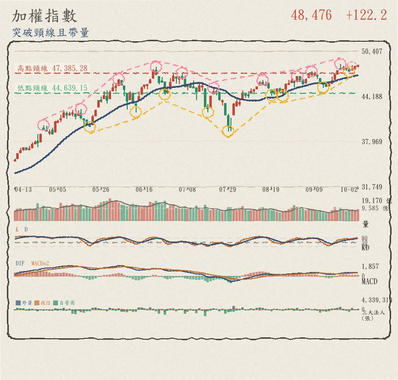
圖說：加權指數日 K（與個股圖相同標記）：黃圈＝轉折低點、粉圈＝轉折高點、虛線小圈＝還沒確認的轉折、藍線＝月線 MA20、水平虛線＝高點／低點頸線。最後一根是資料日當天。
本區塊為公開資料的技術面觀察，不構成投資建議，
不報牌、不預測、不下買賣決策。成交金額為集中市場總成交金額（含 ETF／權證），
與頁首摘要的「上市個股成交金額」口徑不同。標籤是統計，不是評分、也不是推薦。
上市 vs 上櫃（同期快篩）
加權 +0.25% vs 櫃買 +1.94%（同向） → 同向
（兩個市場分開寫，不合併成一個數字；櫃買為 TPEX 公開資料）
櫃買歷史：TPEX 逐日回補 130 根；來源：櫃買中心 www/zh-tw/indexInfo/sectinx（逐日，官方；OpenAPI tpex_index 只回當月）
（TPEX OpenAPI 只回當月，故逐日回補；歷史不足就不算該條均線並標「資料不足」，不用錯數字）
近 20 個交易日大盤狀態回溯（最新在上）（點開看逐日主狀態／量比／量價象限）
用同一支程式回算最近 20 個交易日（主狀態 S1~S8 與量比 20 皆為當日收盤當時的判定，
不是事後調整）；量比 20 未公布的日子寫「—」。
好條件最多的（前 10）
不好條件最多的（前 10）
好條件（8 項）：站上月線、月線向上、底底高、頭頭高、突破頸線、相對大盤強、攻擊量（量增＋上漲）、守住今日高檔（距今日高點 1% 內）。
不好條件（8 項）：跌破前低、今日下跌、相對大盤弱、在月線之下、量增下跌（出貨）、貼近今日低點（1% 內）、跌破昨日低點、月線下彎。
兩邊都是同一組日線資料＋盤中即時價算出來的「符合項目數」，只是把方向相反的條件分開數；
條件數不是評分或推薦，不構成投資建議。
盤中爆量（估量比 ≥ 1.5）（42 上市 29／上櫃 13）
今日疲弱（跌幅前 10）（10 上市 6／上櫃 4）
逐檔（70 檔，依盤中成交金額排序）
台積電 2330 上市
2565 +65.0（+2.60%）
高點墊高、底部不穩 盤中成交值 448.59 億・全榜第 1 名（上市第 1 名）・相對大盤 +0.11
好條件 7/8：站上月線、月線向上、頭頭高、突破頸線、相對大盤強、攻擊量（量增＋上漲）、守住今日高檔（距今日高點 1% 內）
不好條件 1/8：貼近今日低點（1% 內）
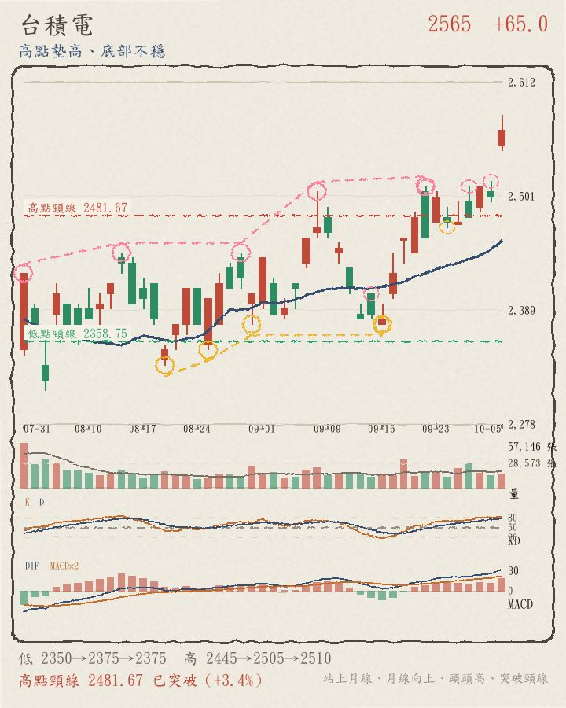
12:31 盤中 2565（+2.60%），比加權指數強 0.11 個百分點、站上月線 2448.25，已突破高點頸線 2481.67，高點還在墊高（但底部沒同步墊高）。
- 月線位置：現價 2565 在月線 2448.25 之上（+4.8%）；5 日線 2488 也在月線之上（短均在上）；月線向上
- 量能：以已過交易時間推估，今天成交量約是 20 日均量的 1.15 倍（量增），比 20 日均量大不少；上漲又量增，量價配合
- 關鍵價位：高點頸線 2481.67 已站上；前一交易日高點 2515（高於 2.0%）；今天盤中高點 2580（低於 0.6%）；今天盤中低點 2545（高於 0.8%）
- 轉折結構：高點 2445、2505、2510 墊高（頭頭高），但低點 2350、2375、2375 沒有同步墊高；還沒確認的轉折低點 09-16 2375、09-24 2470；還沒確認的轉折高點 09-30 2510、10-02 2515（圖上虛線小圈）
聯電 2303 上市
152.5 -9.0（-5.57%）
上升趨勢（底底高＋頭頭高） 盤中成交值 405.4 億・全榜第 2 名（上市第 2 名）・相對大盤 -8.06
好條件 4/8：站上月線、月線向上、底底高、頭頭高
不好條件 5/8：今日下跌、相對大盤弱、量增下跌（出貨）、貼近今日低點（1% 內）、跌破昨日低點
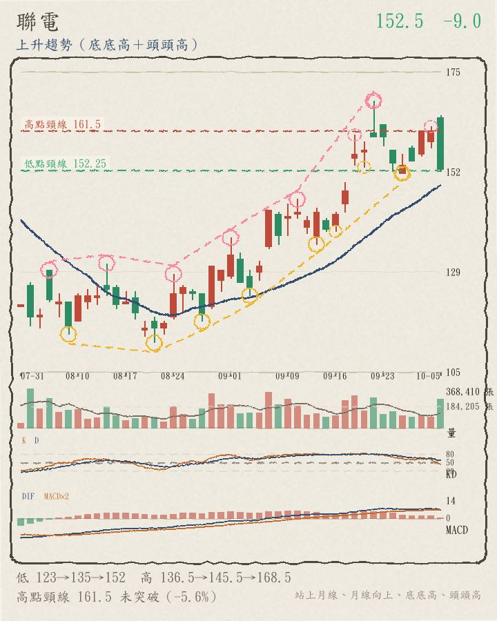
12:31 盤中 152.5（-5.57%），比加權指數弱 8.06 個百分點、站上月線 147.4，離高點頸線 161.5 還差 5.6%，轉折結構仍是底底高＋頭頭高。
- 月線位置：現價 152.5 在月線 147.4 之上（+3.5%）；5 日線 157 也在月線之上（短均在上）；月線向上
- 量能：以已過交易時間推估，今天成交量約是 20 日均量的 1.94 倍（爆量），比 20 日均量大不少；下跌卻量增，量價背離
- 關鍵價位：高點頸線 161.5 還沒突破，差 5.6%；前一交易日高點 162.5（低於 6.2%）；今天盤中高點 165（低於 7.6%）；今天盤中低點 152（高於 0.3%）
- 轉折結構：低點 123、135、151.5 一路墊高、高點 136.5、145.5、168.5 也一路墊高，是底底高＋頭頭高；還沒確認的轉折低點 09-21 153、09-29 151.5；還沒確認的轉折高點 09-22 168.5、10-02 162.5（圖上虛線小圈）
友達 2409 上市
39.2 -1.2（-3.09%）
高點墊高、底部不穩 盤中成交值 327.18 億・全榜第 3 名（上市第 3 名）・相對大盤 -5.58
好條件 4/8：站上月線、月線向上、頭頭高、突破頸線
不好條件 4/8：今日下跌、相對大盤弱、量增下跌（出貨）、貼近今日低點（1% 內）
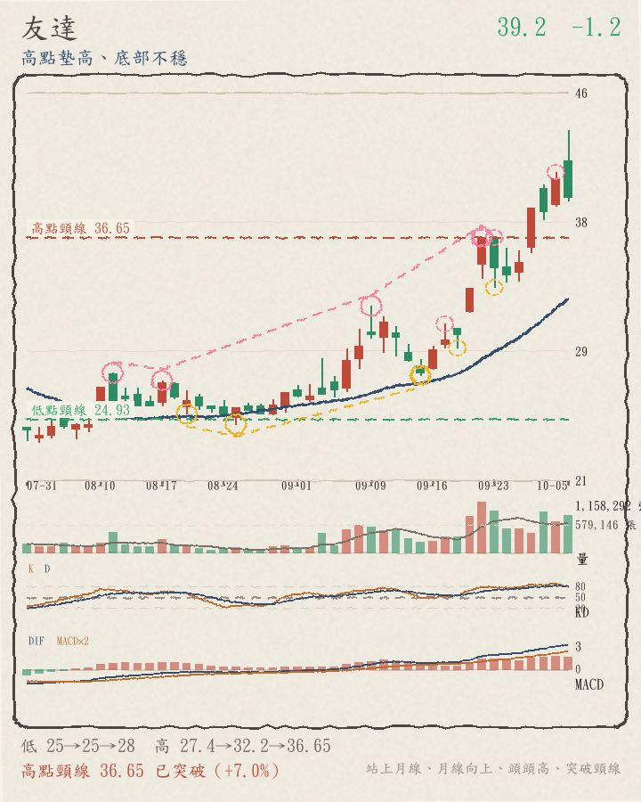
12:31 盤中 39.2（-3.09%），比加權指數弱 5.58 個百分點、站上月線 32.058，已突破高點頸線 36.65，高點還在墊高（但底部沒同步墊高）。
- 月線位置：現價 39.2 在月線 32.058 之上（+22.3%）；5 日線 37.31 也在月線之上（短均在上）；月線向上
- 量能：以已過交易時間推估，今天成交量約是 20 日均量的 2.06 倍（爆量），比 20 日均量大不少；下跌卻量增，量價背離
- 關鍵價位：高點頸線 36.65 已站上；前一交易日高點 40.85（低於 4.0%）；今天盤中高點 43.55（低於 10.0%）；今天盤中低點 39（高於 0.5%）
- 轉折結構：高點 27.4、32.2、36.65 墊高（頭頭高），但低點 25.25、24.6、27.75 沒有同步墊高；還沒確認的轉折低點 09-18 29.5、09-23 33.4；還沒確認的轉折高點 09-23 36.65、10-02 40.85（圖上虛線小圈）
華新科 2492 上市
376 +14.5（+4.01%）
上升趨勢（底底高＋頭頭高） 盤中成交值 320.55 億・全榜第 4 名（上市第 4 名）・相對大盤 +1.52
好條件 7/8：站上月線、月線向上、底底高、頭頭高、突破頸線、相對大盤強、攻擊量（量增＋上漲）
不好條件 0/8：無
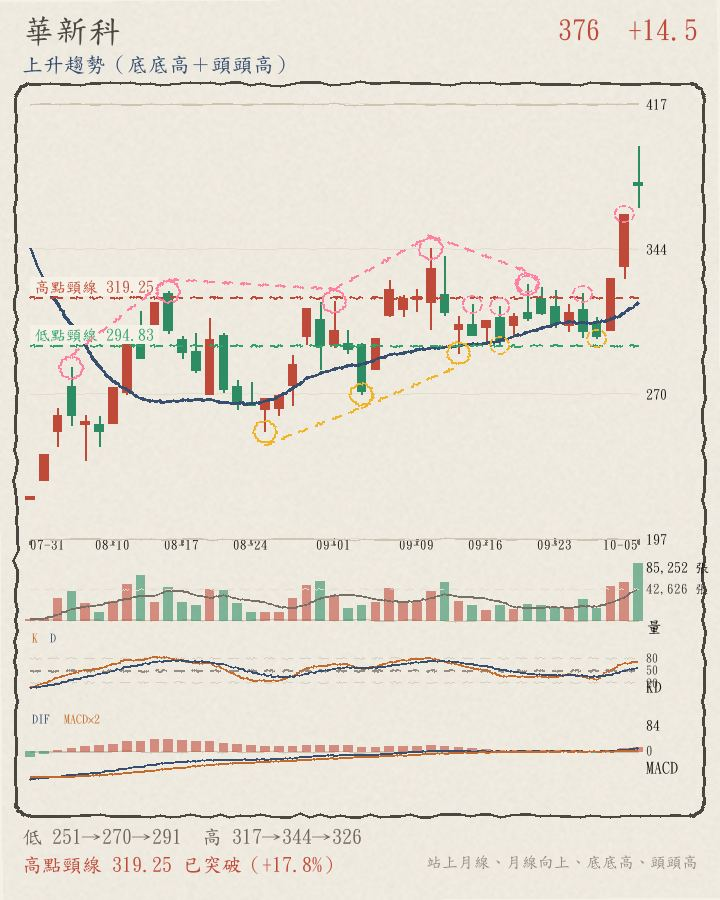
12:31 盤中 376（+4.01%），比加權指數強 1.52 個百分點、站上月線 311.25，已突破高點頸線 319.25，轉折結構仍是底底高＋頭頭高。
- 月線位置：現價 376 在月線 311.25 之上（+20.8%）；5 日線 320.7 也在月線之上（短均在上）；月線向上
- 量能：以已過交易時間推估，今天成交量約是 20 日均量的 4.06 倍（爆量），比 20 日均量大不少；上漲又量增，量價配合
- 關鍵價位：高點頸線 319.25 已站上；前一交易日高點 361.5（高於 4.0%）；今天盤中高點 396（低於 5.1%）；今天盤中低點 365（高於 3.0%）
- 轉折結構：低點 251、270、291 一路墊高、高點 317、344、326 也一路墊高，是底底高＋頭頭高；還沒確認的轉折低點 09-17 295、09-30 298.5；還沒確認的轉折高點 09-29 321、10-02 361.5（圖上虛線小圈）
國巨* 2327 上市
633 +7.0（+1.12%）
上升趨勢（底底高＋頭頭高） 盤中成交值 312.87 億・全榜第 5 名（上市第 5 名）・相對大盤 -1.37
好條件 6/8：站上月線、月線向上、底底高、頭頭高、突破頸線、攻擊量（量增＋上漲）
不好條件 2/8：相對大盤弱、貼近今日低點（1% 內）
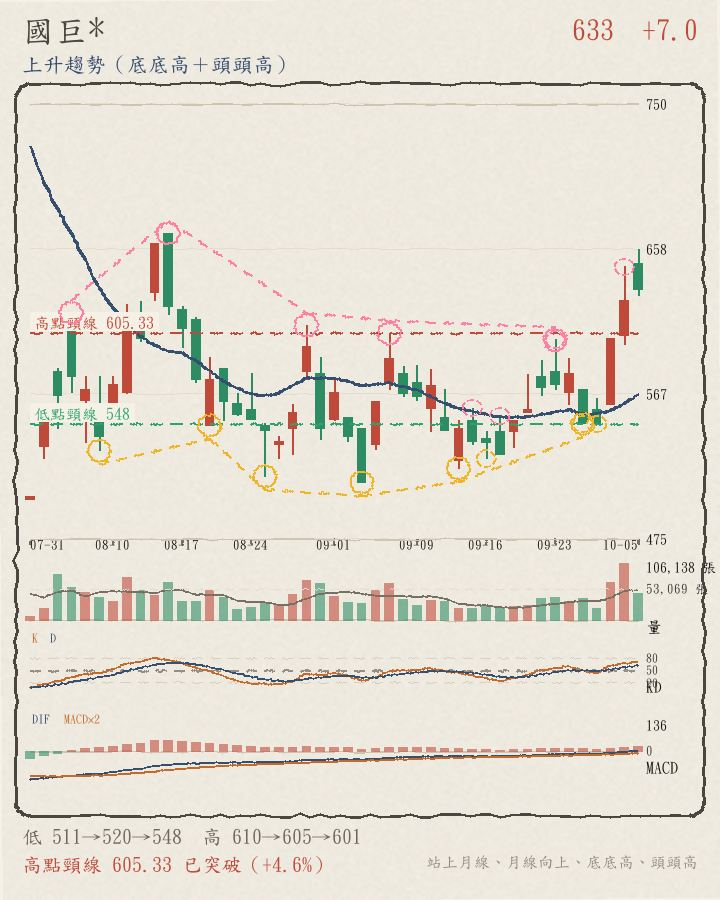
12:31 盤中 633（+1.12%），比加權指數弱 1.37 個百分點、站上月線 560.6，已突破高點頸線 605.33，轉折結構仍是底底高＋頭頭高。
- 月線位置：現價 633 在月線 560.6 之上（+12.9%）；5 日線 580.8 也在月線之上（短均在上）；月線向上
- 量能：以已過交易時間推估，今天成交量約是 20 日均量的 1.77 倍（爆量），比 20 日均量大不少；上漲又量增，量價配合
- 關鍵價位：高點頸線 605.33 已站上；前一交易日高點 647（低於 2.2%）；今天盤中高點 658（低於 3.8%）；今天盤中低點 629（高於 0.6%）
- 轉折結構：低點 511、520、548 一路墊高、高點 610、605、601 也一路墊高，是底底高＋頭頭高；還沒確認的轉折低點 09-29 548、09-30 548；還沒確認的轉折高點 09-23 601、10-02 647（圖上虛線小圈）
景碩 3189 上市
1115 +65.0（+6.19%）
高點墊高、底部不穩 盤中成交值 299.51 億・全榜第 6 名（上市第 6 名）・相對大盤 +3.70
好條件 6/8：站上月線、月線向上、頭頭高、突破頸線、相對大盤強、攻擊量（量增＋上漲）
不好條件 0/8：無
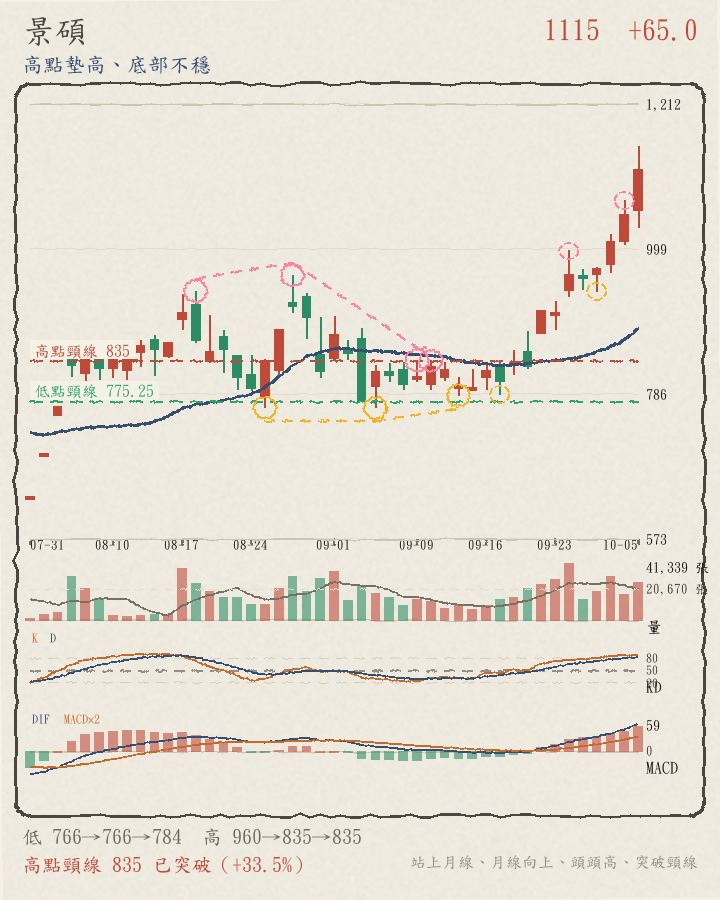
12:31 盤中 1115（+6.19%），比加權指數強 3.70 個百分點、站上月線 865.35，已突破高點頸線 835，高點還在墊高（但底部沒同步墊高）。
- 月線位置：現價 1115 在月線 865.35 之上（+28.9%）；5 日線 989.4 也在月線之上（短均在上）；月線向上
- 量能：以已過交易時間推估，今天成交量約是 20 日均量的 1.86 倍（爆量），比 20 日均量大不少；上漲又量增，量價配合
- 關鍵價位：高點頸線 835 已站上；前一交易日高點 1070（高於 4.2%）；今天盤中高點 1150（低於 3.0%）；今天盤中低點 1030（高於 8.3%）
- 轉折結構：高點 960、835、835 墊高（頭頭高），但低點 766、766、784 沒有同步墊高；還沒確認的轉折低點 09-17 785、09-30 937；還沒確認的轉折高點 09-24 996、10-02 1070（圖上虛線小圈）
欣興 3037 上市
1335 +30.0（+2.30%）
高點墊高、底部不穩 盤中成交值 297.21 億・全榜第 7 名（上市第 7 名）・相對大盤 -0.19
好條件 5/8：站上月線、月線向上、頭頭高、突破頸線、攻擊量（量增＋上漲）
不好條件 1/8：相對大盤弱
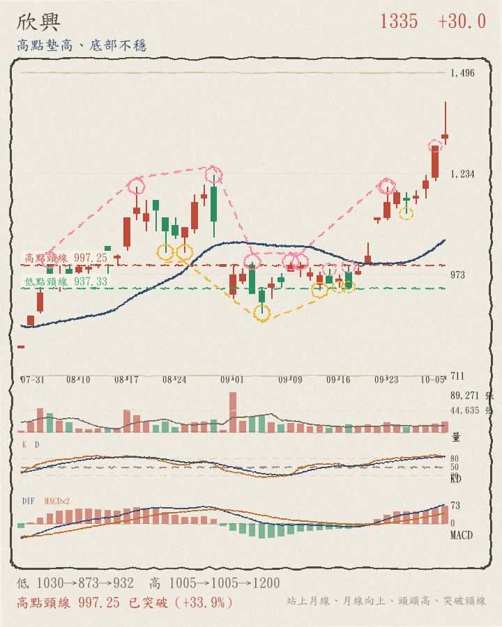
12:31 盤中 1335（+2.30%），比加權指數弱 0.19 個百分點、站上月線 1042，已突破高點頸線 997.25，高點還在墊高（但底部沒同步墊高）。
- 月線位置：現價 1335 在月線 1042 之上（+28.1%）；5 日線 1209 也在月線之上（短均在上）；月線向上
- 量能：以已過交易時間推估，今天成交量約是 20 日均量的 1.65 倍（爆量），比 20 日均量大不少；上漲又量增，量價配合
- 關鍵價位：高點頸線 997.25 已站上；前一交易日高點 1305（高於 2.3%）；今天盤中高點 1420（低於 6.0%）；今天盤中低點 1310（高於 1.9%）
- 轉折結構：高點 1005、1005、1200 墊高（頭頭高），但低點 1030、873、932 沒有同步墊高；還沒確認的轉折低點 09-17 940、09-29 1130；還沒確認的轉折高點 09-23 1200、10-02 1305（圖上虛線小圈）
臻鼎-KY 4958 上市
576 +15.0（+2.67%）
上升趨勢（底底高＋頭頭高） 盤中成交值 273.69 億・全榜第 8 名（上市第 8 名）・相對大盤 +0.18
好條件 7/8：站上月線、月線向上、底底高、頭頭高、突破頸線、相對大盤強、攻擊量（量增＋上漲）
不好條件 0/8：無
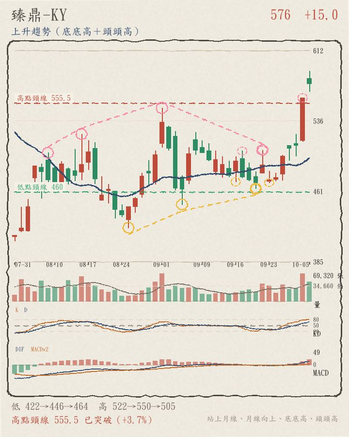
12:31 盤中 576（+2.67%），比加權指數強 0.18 個百分點、站上月線 490.9，已突破高點頸線 555.5，轉折結構仍是底底高＋頭頭高。
- 月線位置：現價 576 在月線 490.9 之上（+17.3%）；5 日線 510.4 也在月線之上（短均在上）；月線向上
- 量能：以已過交易時間推估，今天成交量約是 20 日均量的 2.18 倍（爆量），比 20 日均量大不少；上漲又量增，量價配合
- 關鍵價位：高點頸線 555.5 已站上；前一交易日高點 561（高於 2.7%）；今天盤中高點 590（低於 2.4%）；今天盤中低點 568（高於 1.4%）
- 轉折結構：低點 421.5、446.5、463.5 一路墊高、高點 522、550、505 也一路墊高，是底底高＋頭頭高；還沒確認的轉折低點 09-21 463.5、09-23 470；還沒確認的轉折高點 09-22 505、10-02 561（圖上虛線小圈）
聯發科 2454 上市
5155 +205.0（+4.14%）
高點墊高、底部不穩 盤中成交值 268.83 億・全榜第 9 名（上市第 9 名）・相對大盤 +1.65
好條件 5/8：站上月線、月線向上、頭頭高、相對大盤強、守住今日高檔（距今日高點 1% 內）
不好條件 0/8：無
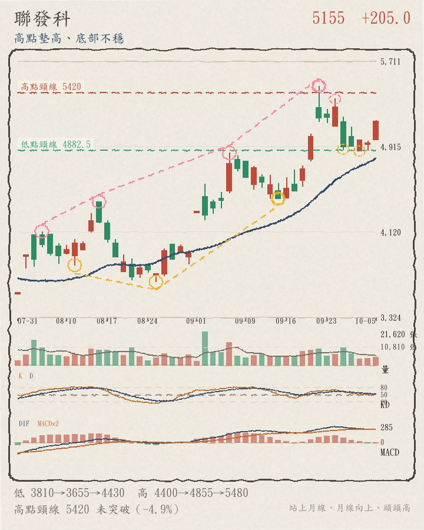
12:31 盤中 5155（+4.14%），比加權指數強 1.65 個百分點、站上月線 4765.25，離高點頸線 5420 還差 4.9%，高點還在墊高（但底部沒同步墊高）。
- 月線位置：現價 5155 在月線 4765.25 之上（+8.2%）；5 日線 5009 也在月線之上（短均在上）；月線向上
- 量能：以已過交易時間推估，今天成交量約是 20 日均量的 0.81 倍（量平），比 20 日均量少很多；上漲但量縮，量價背離
- 關鍵價位：高點頸線 5420 還沒突破，差 4.9%；前一交易日高點 4970（高於 3.7%）；今天盤中高點 5160（低於 0.1%）；今天盤中低點 4980（高於 3.5%）
- 轉折結構：高點 4400、4855、5480 墊高（頭頭高），但低點 3810、3655、4430 沒有同步墊高；還沒確認的轉折低點 09-29 4890、10-01 4875；還沒確認的轉折高點 09-22 5480、09-24 5360（圖上虛線小圈）
台達電 2308 上市
2005 +120.0（+6.37%）
高點墊高、底部不穩 盤中成交值 259.71 億・全榜第 10 名（上市第 10 名）・相對大盤 +3.88
好條件 7/8：站上月線、月線向上、頭頭高、突破頸線、相對大盤強、攻擊量（量增＋上漲）、守住今日高檔（距今日高點 1% 內）
不好條件 0/8：無
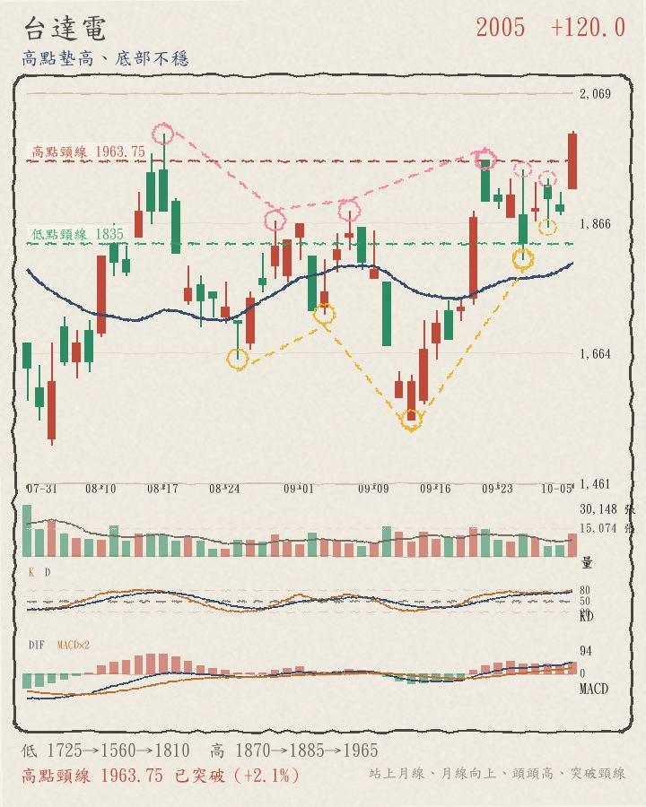
12:31 盤中 2005（+6.37%），比加權指數強 3.88 個百分點、站上月線 1792.5，已突破高點頸線 1963.75，高點還在墊高（但底部沒同步墊高）。
- 月線位置：現價 2005 在月線 1792.5 之上（+11.8%）；5 日線 1885 也在月線之上（短均在上）；月線向上
- 量能：以已過交易時間推估，今天成交量約是 20 日均量的 1.54 倍（爆量），比 20 日均量大不少；上漲又量增，量價配合
- 關鍵價位：高點頸線 1963.75 已站上；前一交易日高點 1915（高於 4.7%）；今天盤中高點 2010（低於 0.2%）；今天盤中低點 1920（高於 4.4%）
- 轉折結構：高點 1870、1885、1965 墊高（頭頭高），但低點 1725、1560、1810 沒有同步墊高；還沒確認的轉折低點 09-29 1810、10-01 1860；還沒確認的轉折高點 09-29 1950、10-01 1935（圖上虛線小圈）
南亞 1303 上市
286 +26.0（+10.00%）
高點墊高、底部不穩 盤中成交值 247.77 億・全榜第 11 名（上市第 11 名）・相對大盤 +7.51
好條件 6/8：站上月線、月線向上、頭頭高、突破頸線、相對大盤強、攻擊量（量增＋上漲）
不好條件 0/8：無
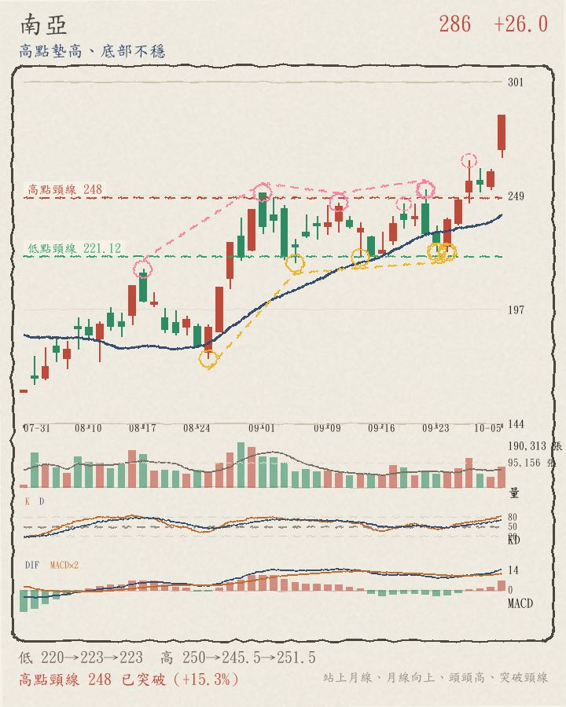
12:31 盤中 286（+10.00%），比加權指數強 7.51 個百分點、站上月線 236.675，已突破高點頸線 248，高點還在墊高（但底部沒同步墊高）。
- 月線位置：現價 286 在月線 236.675 之上（+20.8%）；5 日線 250.9 也在月線之上（短均在上）；月線向上
- 量能：以已過交易時間推估，今天成交量約是 20 日均量的 1.55 倍（爆量），比 20 日均量大不少；上漲又量增，量價配合
- 關鍵價位：高點頸線 248 已站上；前一交易日高點 261（高於 9.6%）；今天盤中高點 286（高於 0.0%）；今天盤中低點 266.5（高於 7.3%）
- 轉折結構：高點 250、245.5、251.5 墊高（頭頭高），但低點 220.5、223、223 沒有同步墊高；還沒確認的轉折低點 09-23 223、09-24 223；還沒確認的轉折高點 09-22 251.5、09-30 265（圖上虛線小圈）
穩懋 3105 上櫃
612 +21.0（+3.55%）
高點墊高、底部不穩 盤中成交值 238.83 億・全榜第 12 名（上櫃第 1 名）・相對大盤 +1.06
好條件 6/8：站上月線、月線向上、頭頭高、突破頸線、相對大盤強、攻擊量（量增＋上漲）
不好條件 0/8：無
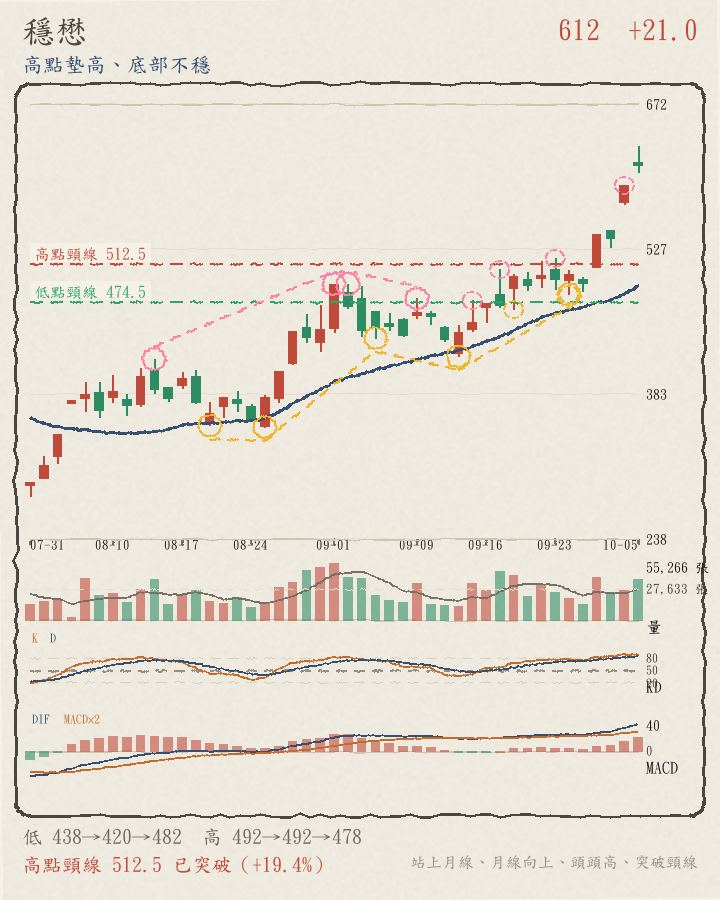
12:31 盤中 612（+3.55%），比加權指數強 1.06 個百分點、站上月線 482.35，已突破高點頸線 512.5，高點還在墊高（但底部沒同步墊高）。
- 月線位置：現價 612 在月線 482.35 之上（+26.9%）；5 日線 533.2 也在月線之上（短均在上）；月線向上
- 量能：以已過交易時間推估，今天成交量約是 20 日均量的 1.77 倍（爆量），比 20 日均量大不少；上漲又量增，量價配合
- 關鍵價位：高點頸線 512.5 已站上；前一交易日高點 591（高於 3.6%）；今天盤中高點 630（低於 2.9%）；今天盤中低點 604（高於 1.3%）
- 轉折結構：高點 492、492、478 墊高（頭頭高），但低點 438.5、420、482 沒有同步墊高；還沒確認的轉折低點 09-18 467、09-24 482；還沒確認的轉折高點 09-23 518、10-02 591（圖上虛線小圈）
金居 8358 上櫃
570 +51.0（+9.83%）
上升趨勢（底底高＋頭頭高） 盤中成交值 227.06 億・全榜第 13 名（上櫃第 2 名）・相對大盤 +7.34
好條件 6/8：站上月線、底底高、頭頭高、突破頸線、相對大盤強、攻擊量（量增＋上漲）
不好條件 1/8：月線下彎
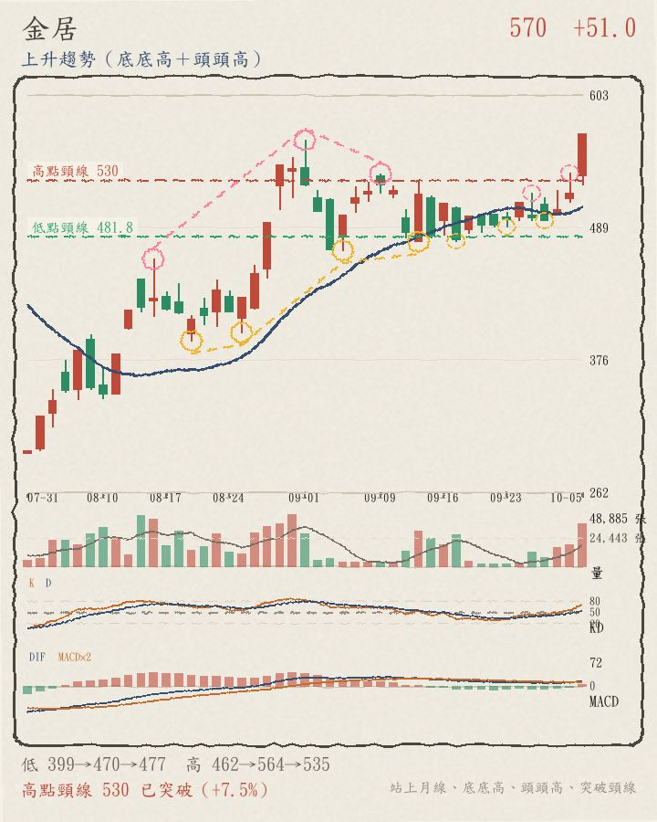
12:31 盤中 570（+9.83%），比加權指數強 7.34 個百分點、站上月線 501.65，已突破高點頸線 530，轉折結構仍是底底高＋頭頭高。
- 月線位置：現價 570 在月線 501.65 之上（+13.6%）；5 日線 505.6 也在月線之上（短均在上）；月線向下
- 量能：以已過交易時間推估，今天成交量約是 20 日均量的 4.95 倍（爆量），比 20 日均量大不少；上漲又量增，量價配合
- 關鍵價位：高點頸線 530 已站上；前一交易日高點 536（高於 6.3%）；今天盤中高點 570（高於 0.0%）；今天盤中低點 526（高於 8.4%）
- 轉折結構：低點 399、469.5、477 一路墊高、高點 462、564、535 也一路墊高，是底底高＋頭頭高；還沒確認的轉折低點 09-23 490、09-30 495；還沒確認的轉折高點 09-29 519、10-02 536（圖上虛線小圈）
台燿 6274 上櫃
1780 +160.0（+9.88%）
高點墊高、底部不穩 盤中成交值 192.13 億・全榜第 14 名（上櫃第 3 名）・相對大盤 +7.39
好條件 6/8：站上月線、月線向上、頭頭高、突破頸線、相對大盤強、攻擊量（量增＋上漲）
不好條件 0/8：無
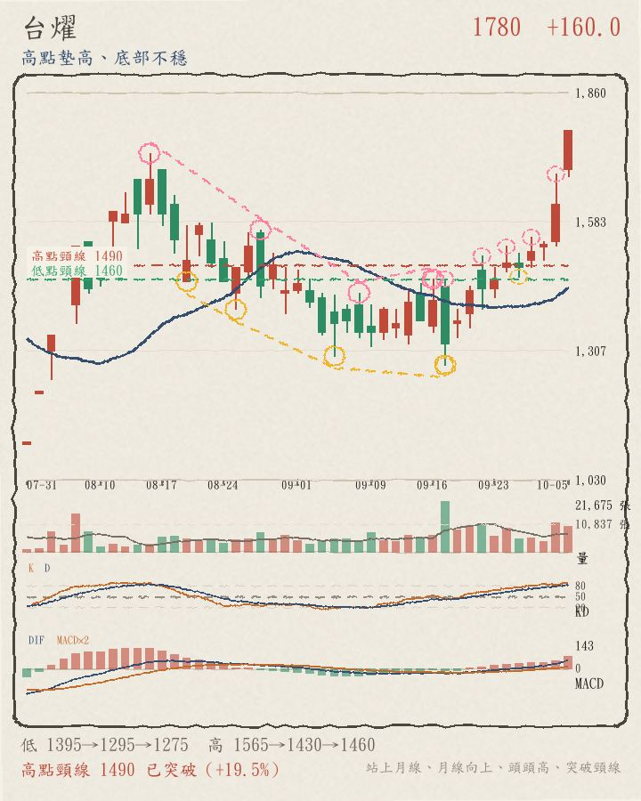
12:31 盤中 1780（+9.88%），比加權指數強 7.39 個百分點、站上月線 1420.25，已突破高點頸線 1490，高點還在墊高（但底部沒同步墊高）。
- 月線位置：現價 1780 在月線 1420.25 之上（+25.3%）；5 日線 1531 也在月線之上（短均在上）；月線向上
- 量能：以已過交易時間推估，今天成交量約是 20 日均量的 1.87 倍（爆量），比 20 日均量大不少；上漲又量增，量價配合
- 關鍵價位：高點頸線 1490 已站上；前一交易日高點 1685（高於 5.6%）；今天盤中高點 1780（高於 0.0%）；今天盤中低點 1680（高於 6.0%）
- 轉折結構：高點 1565、1430、1460 墊高（頭頭高），但低點 1395、1295、1275 沒有同步墊高；還沒確認的轉折低點 09-17 1275、09-29 1465；還沒確認的轉折高點 09-30 1550、10-02 1685（圖上虛線小圈）
南電 8046 上市
1515 +55.0（+3.77%）
上升趨勢（底底高＋頭頭高） 盤中成交值 190.28 億・全榜第 15 名（上市第 12 名）・相對大盤 +1.28
好條件 7/8：站上月線、月線向上、底底高、頭頭高、突破頸線、相對大盤強、攻擊量（量增＋上漲）
不好條件 0/8：無
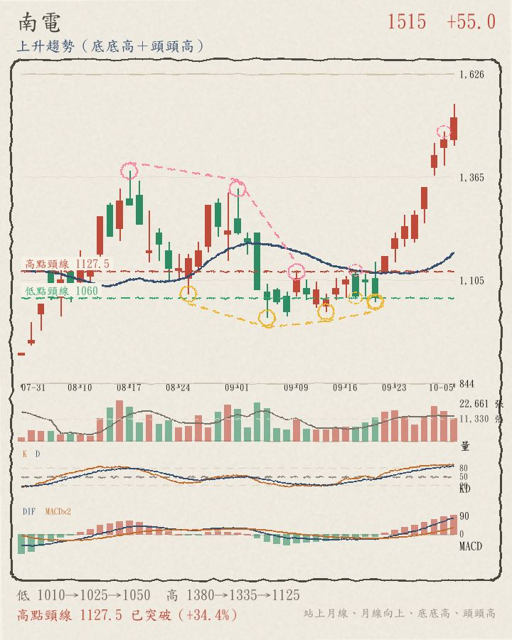
12:31 盤中 1515（+3.77%），比加權指數強 1.28 個百分點、站上月線 1152.25，已突破高點頸線 1127.5，轉折結構仍是底底高＋頭頭高。
- 月線位置：現價 1515 在月線 1152.25 之上（+31.5%）；5 日線 1346 也在月線之上（短均在上）；月線向上
- 量能：以已過交易時間推估，今天成交量約是 20 日均量的 1.43 倍（量增），比 20 日均量大不少；上漲又量增，量價配合
- 關鍵價位：高點頸線 1127.5 已站上；前一交易日高點 1480（高於 2.4%）；今天盤中高點 1550（低於 2.3%）；今天盤中低點 1445（高於 4.8%）
- 轉折結構：低點 1010、1025、1050 一路墊高、高點 1380、1335、1125 也一路墊高，是底底高＋頭頭高；還沒確認的轉折低點 09-17 1060、09-21 1050；還沒確認的轉折高點 09-17 1130、10-02 1480（圖上虛線小圈）
環球晶 6488 上櫃
1185 -5.0（-0.42%）
高點墊高、底部不穩 盤中成交值 185.76 億・全榜第 16 名（上櫃第 4 名）・相對大盤 -2.91
好條件 4/8：站上月線、月線向上、頭頭高、突破頸線
不好條件 3/8：今日下跌、相對大盤弱、量增下跌（出貨）
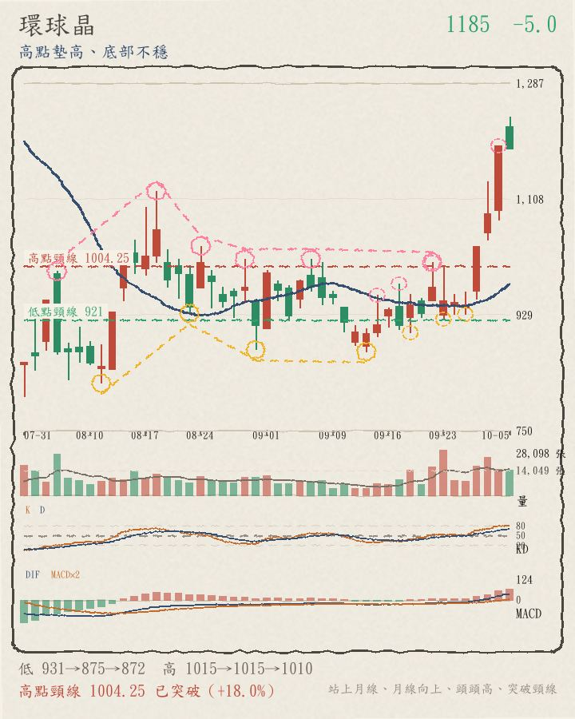
12:31 盤中 1185（-0.42%），比加權指數弱 2.91 個百分點、站上月線 963.5，已突破高點頸線 1004.25，高點還在墊高（但底部沒同步墊高）。
- 月線位置：現價 1185 在月線 963.5 之上（+23.0%）；5 日線 1040.6 也在月線之上（短均在上）；月線向上
- 量能：以已過交易時間推估，今天成交量約是 20 日均量的 1.90 倍（爆量），比 20 日均量大不少；下跌卻量增，量價背離
- 關鍵價位：高點頸線 1004.25 已站上；前一交易日高點 1190（低於 0.4%）；今天盤中高點 1235（低於 4.0%）；今天盤中低點 1185（高於 0.0%）
- 轉折結構：高點 1015、1015、1010 墊高（頭頭高），但低點 931、875、872 沒有同步墊高；還沒確認的轉折低點 09-23 922、09-29 930；還沒確認的轉折高點 09-22 1010、10-02 1190（圖上虛線小圈）
聯亞 3081 上櫃
3005 +80.0（+2.74%）
區間或轉弱 盤中成交值 181.41 億・全榜第 17 名（上櫃第 5 名）・相對大盤 +0.25
好條件 4/8：站上月線、突破頸線、相對大盤強、攻擊量（量增＋上漲）
不好條件 1/8：月線下彎
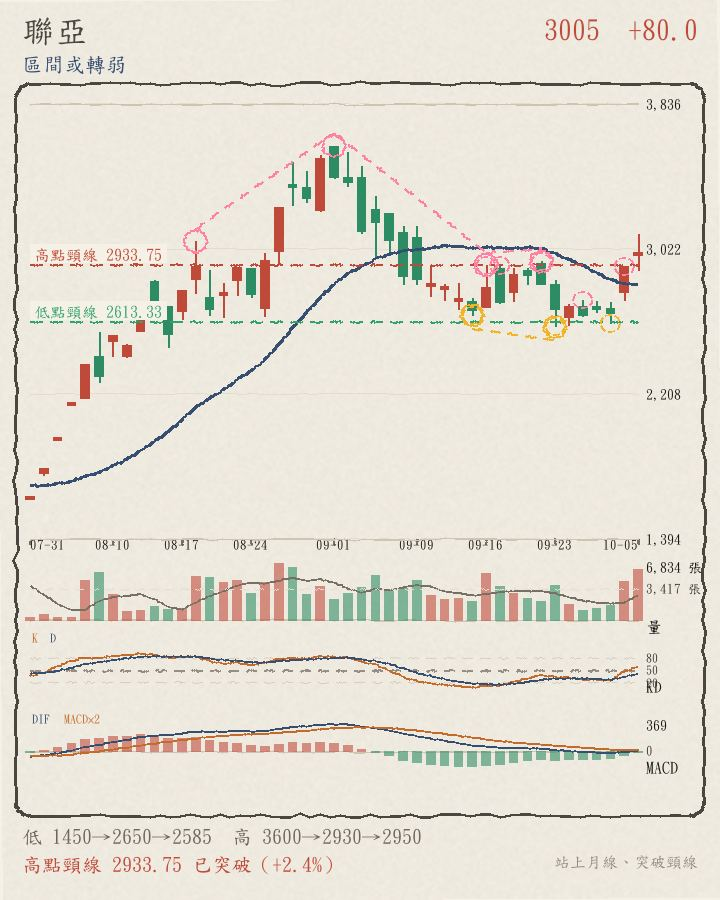
12:31 盤中 3005（+2.74%），比加權指數強 0.25 個百分點、站上月線 2827.5，已突破高點頸線 2933.75，轉折還沒走出明顯方向。
- 月線位置：現價 3005 在月線 2827.5 之上（+6.3%）；5 日線 2726 也在月線之下（短均在下）；月線向下
- 量能：以已過交易時間推估，今天成交量約是 20 日均量的 2.47 倍（爆量），比 20 日均量大不少；上漲又量增，量價配合
- 關鍵價位：高點頸線 2933.75 已站上；前一交易日高點 2925（高於 2.7%）；今天盤中高點 3105（低於 3.2%）；今天盤中低點 2900（高於 3.6%）
- 轉折結構：低點 1450、2650、2585 與高點 3600、2930、2950 都沒有明顯遞增，屬於區間震盪或轉弱；還沒確認的轉折低點 09-23 2585、10-01 2605；還沒確認的轉折高點 09-29 2735、10-02 2925（圖上虛線小圈）
南亞科 2408 上市
523 -3.0（-0.57%）
高點墊高、底部不穩 盤中成交值 172.22 億・全榜第 18 名（上市第 13 名）・相對大盤 -3.06
好條件 2/8：站上月線、頭頭高
不好條件 3/8：今日下跌、相對大盤弱、月線下彎
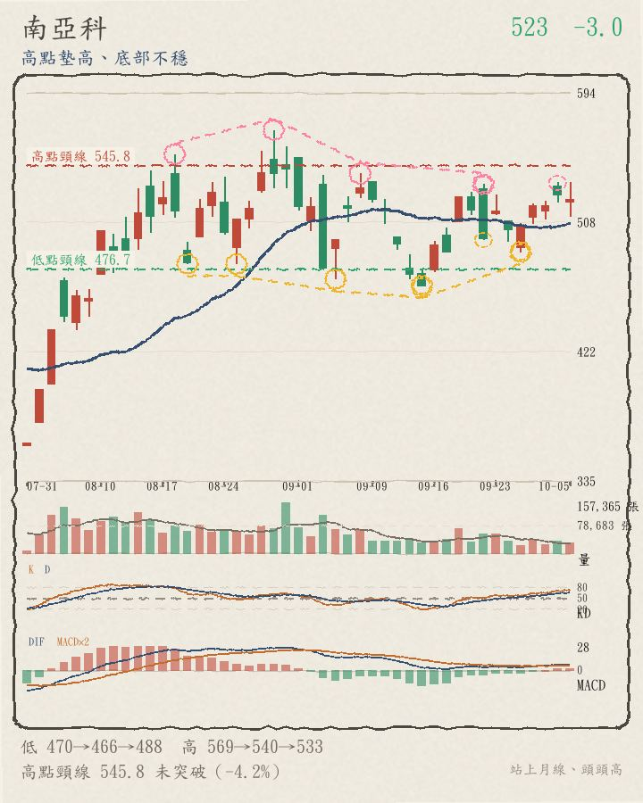
12:31 盤中 523（-0.57%），比加權指數弱 3.06 個百分點、站上月線 504.875，離高點頸線 545.8 還差 4.2%，高點還在墊高（但底部沒同步墊高）。
- 月線位置：現價 523 在月線 504.875 之上（+3.6%）；5 日線 514.6 也在月線之上（短均在上）；月線向下
- 量能：以已過交易時間推估，今天成交量約是 20 日均量的 0.84 倍（量平），比 20 日均量少很多
- 關鍵價位：高點頸線 545.8 還沒突破，差 4.2%；前一交易日高點 534（低於 2.1%）；今天盤中高點 534（低於 2.1%）；今天盤中低點 512（高於 2.1%）
- 轉折結構：高點 569、540、533 墊高（頭頭高），但低點 470、465.5、488 沒有同步墊高；還沒確認的轉折低點 09-22 496、09-29 488；還沒確認的轉折高點 09-22 533、10-02 534（圖上虛線小圈）
群創 3481 上市
52.7 -0.1（-0.19%）
高點墊高、底部不穩 盤中成交值 167.72 億・全榜第 19 名（上市第 14 名）・相對大盤 -2.68
好條件 4/8：站上月線、月線向上、頭頭高、突破頸線
不好條件 4/8：今日下跌、相對大盤弱、量增下跌（出貨）、貼近今日低點（1% 內）
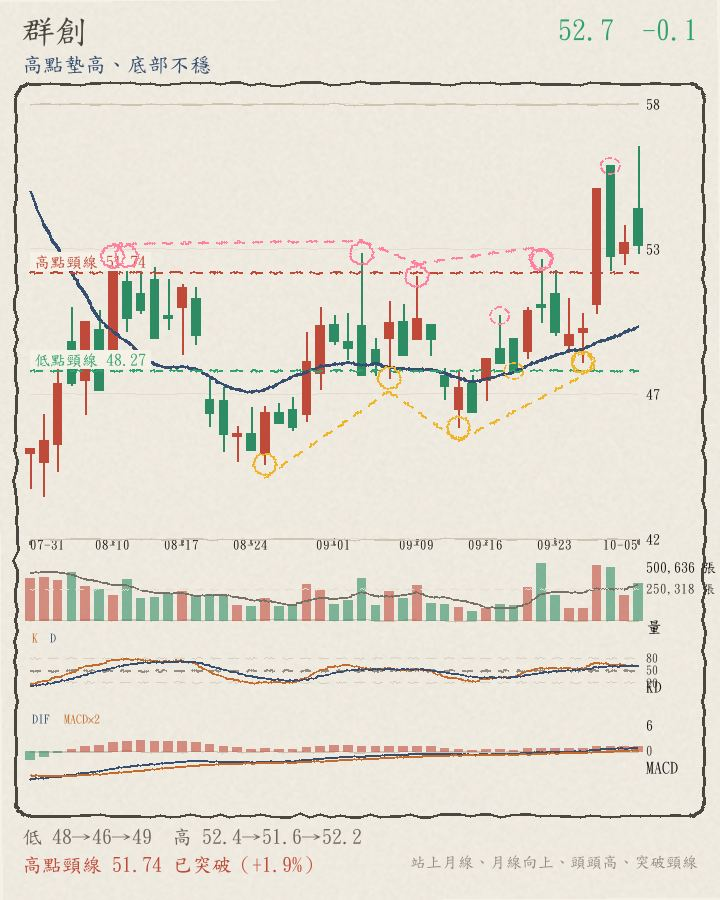
12:31 盤中 52.7（-0.19%），比加權指數弱 2.68 個百分點、站上月線 49.6，已突破高點頸線 51.74，高點還在墊高（但底部沒同步墊高）。
- 月線位置：現價 52.7 在月線 49.6 之上（+6.2%）；5 日線 51.82 也在月線之上（短均在上）；月線向上
- 量能：以已過交易時間推估，今天成交量約是 20 日均量的 1.85 倍（爆量），比 20 日均量大不少；下跌卻量增，量價背離
- 關鍵價位：高點頸線 51.74 已站上；前一交易日高點 53.4（低於 1.3%）；今天盤中高點 56.2（低於 6.2%）；今天盤中低點 52.4（高於 0.6%）
- 轉折結構：高點 52.4、51.6、52.2 墊高（頭頭高），但低點 48、46.25、48.55 沒有同步墊高；還沒確認的轉折低點 09-18 48.25、09-29 48.55；還沒確認的轉折高點 09-22 52.2、10-01 55.5（圖上虛線小圈）
聯茂 6213 上市
751 +68.0（+9.96%）
高點墊高、底部不穩 盤中成交值 144.54 億・全榜第 20 名（上市第 15 名）・相對大盤 +7.47
好條件 6/8：站上月線、月線向上、頭頭高、突破頸線、相對大盤強、攻擊量（量增＋上漲）
不好條件 0/8：無
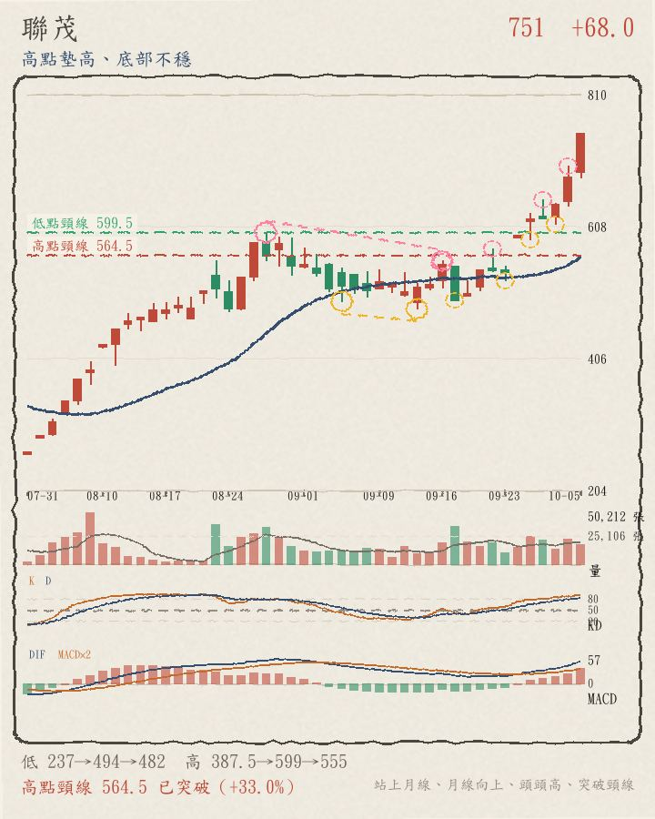
12:31 盤中 751（+9.96%），比加權指數強 7.47 個百分點、站上月線 548.8，已突破高點頸線 564.5，高點還在墊高（但底部沒同步墊高）。
- 月線位置：現價 751 在月線 548.8 之上（+36.8%）；5 日線 632.6 也在月線之上（短均在上）；月線向上
- 量能：以已過交易時間推估，今天成交量約是 20 日均量的 1.47 倍（量增），比 20 日均量大不少；上漲又量增，量價配合
- 關鍵價位：高點頸線 564.5 已站上；前一交易日高點 700（高於 7.3%）；今天盤中高點 751（高於 0.0%）；今天盤中低點 682（高於 10.1%）
- 轉折結構：高點 387.5、599、555 墊高（頭頭高），但低點 237、493.5、482 沒有同步墊高；還沒確認的轉折低點 09-29 588、10-01 611；還沒確認的轉折高點 09-30 649、10-02 700（圖上虛線小圈）
大立光 3008 上市
6830 +540.0（+8.59%）
區間或轉弱 盤中成交值 134.76 億・全榜第 21 名（上市第 16 名）・相對大盤 +6.10
好條件 5/8：站上月線、突破頸線、相對大盤強、攻擊量（量增＋上漲）、守住今日高檔（距今日高點 1% 內）
不好條件 1/8：月線下彎
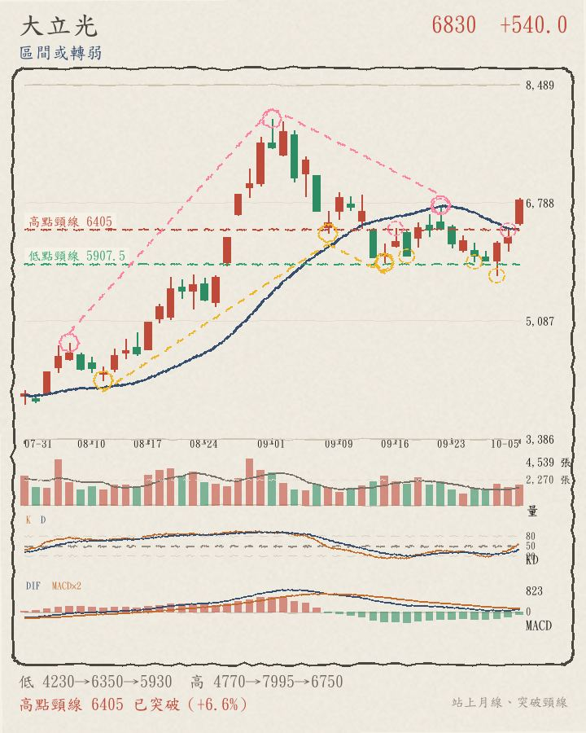
12:31 盤中 6830（+8.59%），比加權指數強 6.10 個百分點、站上月線 6419.25，已突破高點頸線 6405，轉折還沒走出明顯方向。
- 月線位置：現價 6830 在月線 6419.25 之上（+6.4%）；5 日線 6141 也在月線之下（短均在下）；月線向下
- 量能：以已過交易時間推估，今天成交量約是 20 日均量的 1.35 倍（量增），比 20 日均量大不少；上漲又量增，量價配合
- 關鍵價位：高點頸線 6405 已站上；前一交易日高點 6395（高於 6.8%）；今天盤中高點 6850（低於 0.3%）；今天盤中低點 6460（高於 5.7%）
- 轉折結構：低點 4230、6350、5930 與高點 4770、7995、6750 都沒有明顯遞增，屬於區間震盪或轉弱；還沒確認的轉折低點 09-29 5940、10-01 5740；還沒確認的轉折高點 09-22 6750、10-02 6395（圖上虛線小圈）
奇鋐 3017 上市
3575 +135.0（+3.92%）
區間或轉弱 盤中成交值 134.21 億・全榜第 22 名（上市第 17 名）・相對大盤 +1.43
好條件 4/8：站上月線、月線向上、相對大盤強、攻擊量（量增＋上漲）
不好條件 0/8：無
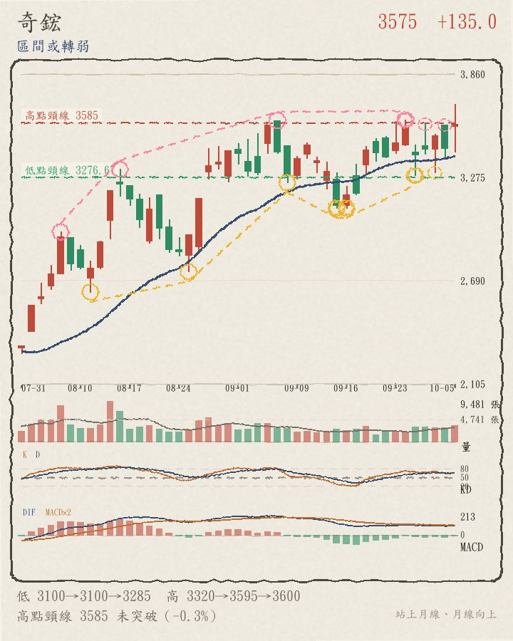
12:31 盤中 3575（+3.92%），比加權指數強 1.43 個百分點、站上月線 3380.75，離高點頸線 3585 還差 0.3%，轉折還沒走出明顯方向。
- 月線位置：現價 3575 在月線 3380.75 之上（+5.8%）；5 日線 3468 也在月線之上（短均在上）；月線向上
- 量能：以已過交易時間推估，今天成交量約是 20 日均量的 1.69 倍（爆量），比 20 日均量大不少；上漲又量增，量價配合
- 關鍵價位：高點頸線 3585 還沒突破，差 0.3%；前一交易日高點 3570（高於 0.1%）；今天盤中高點 3690（低於 3.1%）；今天盤中低點 3420（高於 4.5%）
- 轉折結構：低點 3100、3100、3285 與高點 3320、3595、3600 都沒有明顯遞增，屬於區間震盪或轉弱；還沒確認的轉折低點 09-29 3285、10-01 3300；還沒確認的轉折高點 09-30 3575、10-02 3570（圖上虛線小圈）
台虹 8039 上市
306 +10.0（+3.38%）
區間或轉弱 盤中成交值 123.95 億・全榜第 23 名（上市第 18 名）・相對大盤 +0.89
好條件 5/8：站上月線、突破頸線、相對大盤強、攻擊量（量增＋上漲）、守住今日高檔（距今日高點 1% 內）
不好條件 1/8：月線下彎
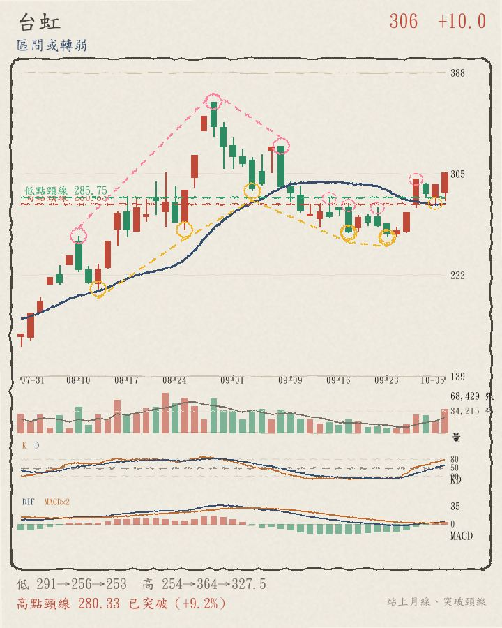
12:31 盤中 306（+3.38%），比加權指數強 0.89 個百分點、站上月線 279.75，已突破高點頸線 280.33，轉折還沒走出明顯方向。
- 月線位置：現價 306 在月線 279.75 之上（+9.4%）；5 日線 283.4 也在月線之上（短均在上）；月線向下
- 量能：以已過交易時間推估，今天成交量約是 20 日均量的 2.38 倍（爆量），比 20 日均量大不少；上漲又量增，量價配合
- 關鍵價位：高點頸線 280.33 已站上；前一交易日高點 296（高於 3.4%）；今天盤中高點 306.5（低於 0.2%）；今天盤中低點 283（高於 8.1%）
- 轉折結構：低點 291、256.5、253 與高點 254、364、327.5 都沒有明顯遞增，屬於區間震盪或轉弱；還沒確認的轉折低點 09-23 253、10-02 280.5；還沒確認的轉折高點 09-22 277、09-30 300.5（圖上虛線小圈）
華通 2313 上市
248.5 +22.5（+9.96%）
底部墊高、未過前高 盤中成交值 120.1 億・全榜第 24 名（上市第 19 名）・相對大盤 +7.47
好條件 5/8：站上月線、底底高、突破頸線、相對大盤強、攻擊量（量增＋上漲）
不好條件 1/8：月線下彎
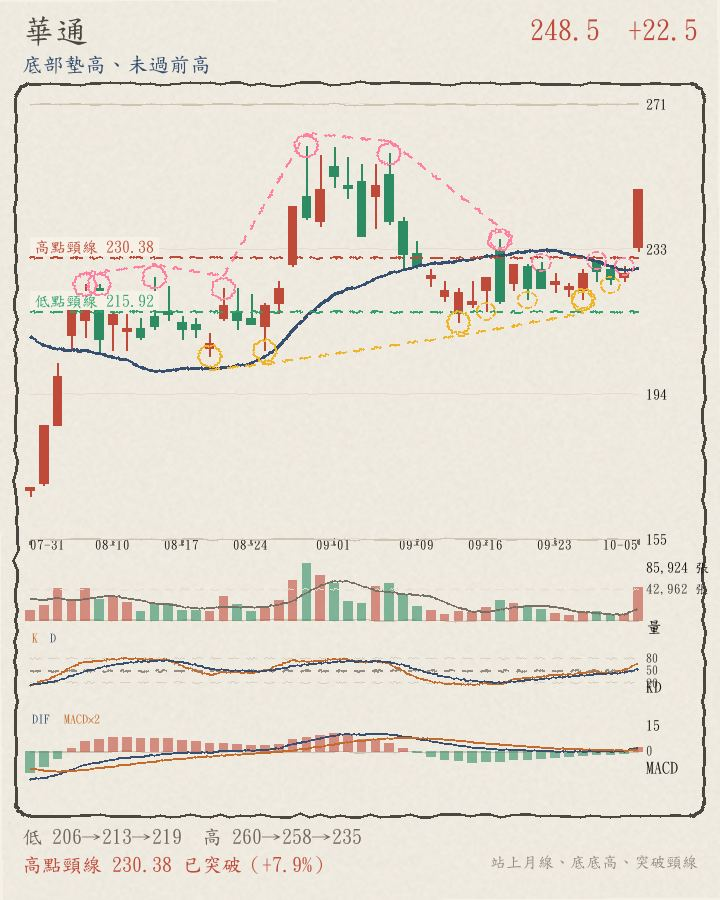
12:31 盤中 248.5（+9.96%），比加權指數強 7.47 個百分點、站上月線 226.825，已突破高點頸線 230.38，底部還在墊高（但高點沒同步創高）。
- 月線位置：現價 248.5 在月線 226.825 之上（+9.6%）；5 日線 225.1 也在月線之下（短均在下）；月線向下
- 量能：以已過交易時間推估，今天成交量約是 20 日均量的 2.92 倍（爆量），比 20 日均量大不少；上漲又量增，量價配合
- 關鍵價位：高點頸線 230.38 已站上；前一交易日高點 228（高於 9.0%）；今天盤中高點 248.5（高於 0.0%）；今天盤中低點 232（高於 7.1%）
- 轉折結構：低點 205.5、213、219 墊高（底底高），但高點 260、258、235 沒有同步創高；還沒確認的轉折低點 09-29 219、10-01 223；還沒確認的轉折高點 09-30 229.5、10-02 228（圖上虛線小圈）
華邦電 2344 上市
178 -1.0（-0.56%）
高點墊高、底部不穩 盤中成交值 119.23 億・全榜第 25 名（上市第 20 名）・相對大盤 -3.05
好條件 2/8：站上月線、頭頭高
不好條件 3/8：今日下跌、相對大盤弱、月線下彎
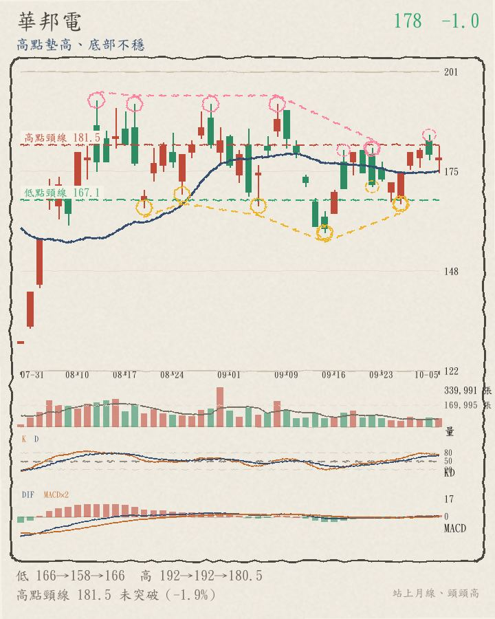
12:31 盤中 178（-0.56%），比加權指數弱 3.05 個百分點、站上月線 174.225，離高點頸線 181.5 還差 1.9%，高點還在墊高（但底部沒同步墊高）。
- 月線位置：現價 178 在月線 174.225 之上（+2.2%）；5 日線 176.8 也在月線之上（短均在上）；月線向下
- 量能：以已過交易時間推估，今天成交量約是 20 日均量的 0.87 倍（量平），比 20 日均量少一些
- 關鍵價位：高點頸線 181.5 還沒突破，差 1.9%；前一交易日高點 184（低於 3.3%）；今天盤中高點 181（低於 1.7%）；今天盤中低點 174（高於 2.3%）
- 轉折結構：高點 192、192、180.5 墊高（頭頭高），但低點 165.5、158.5、166 沒有同步墊高；還沒確認的轉折低點 09-22 170.5、09-29 166；還沒確認的轉折高點 09-22 180.5、10-02 184（圖上虛線小圈）
日月光投控 3711 上市
736 +23.0（+3.23%）
上升趨勢（底底高＋頭頭高） 盤中成交值 103.74 億・全榜第 26 名（上市第 21 名）・相對大盤 +0.74
好條件 7/8：站上月線、月線向上、底底高、頭頭高、突破頸線、相對大盤強、攻擊量（量增＋上漲）
不好條件 1/8：貼近今日低點（1% 內）
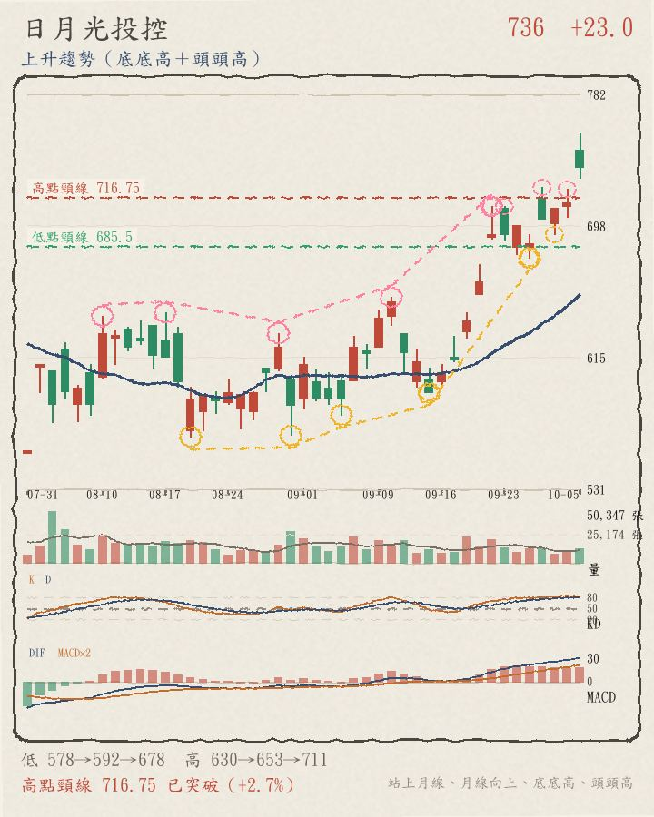
12:31 盤中 736（+3.23%），比加權指數強 0.74 個百分點、站上月線 647.3，已突破高點頸線 716.75，轉折結構仍是底底高＋頭頭高。
- 月線位置：現價 736 在月線 647.3 之上（+13.7%）；5 日線 702.4 也在月線之上（短均在上）；月線向上
- 量能：以已過交易時間推估，今天成交量約是 20 日均量的 1.18 倍（量增），比 20 日均量大不少；上漲又量增，量價配合
- 關鍵價位：高點頸線 716.75 已站上；前一交易日高點 722（高於 1.9%）；今天盤中高點 758（低於 2.9%）；今天盤中低點 729（高於 1.0%）
- 轉折結構：低點 578、592、678 一路墊高、高點 630、653、711 也一路墊高，是底底高＋頭頭高；還沒確認的轉折低點 09-29 678、10-01 693；還沒確認的轉折高點 09-30 723、10-02 722（圖上虛線小圈）
貿聯-KY 3665 上市
2455 -85.0（-3.35%）
高點墊高、底部不穩 盤中成交值 101.64 億・全榜第 27 名（上市第 22 名）・相對大盤 -5.84
好條件 3/8：站上月線、月線向上、頭頭高
不好條件 5/8：今日下跌、相對大盤弱、量增下跌（出貨）、貼近今日低點（1% 內）、跌破昨日低點
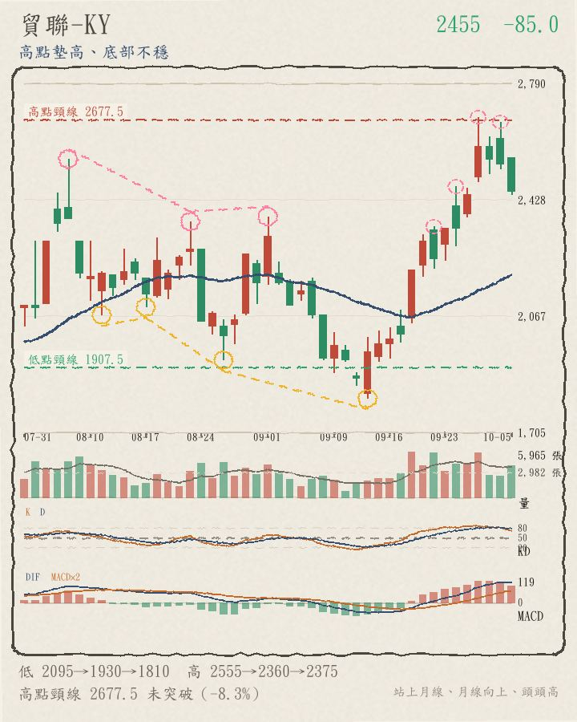
12:31 盤中 2455（-3.35%），比加權指數弱 5.84 個百分點、站上月線 2177，離高點頸線 2677.5 還差 8.3%，高點還在墊高（但底部沒同步墊高）。
- 月線位置：現價 2455 在月線 2177 之上（+12.8%）；5 日線 2495 也在月線之上（短均在上）；月線向上
- 量能：以已過交易時間推估，今天成交量約是 20 日均量的 1.66 倍（爆量），比 20 日均量大不少；下跌卻量增，量價背離
- 關鍵價位：高點頸線 2677.5 還沒突破，差 8.3%；前一交易日高點 2670（低於 8.1%）；今天盤中高點 2560（低於 4.1%）；今天盤中低點 2445（高於 0.4%）
- 轉折結構：高點 2555、2360、2375 墊高（頭頭高），但低點 2095、1930、1810 沒有同步墊高；還沒確認的轉折高點 09-30 2685、10-02 2670（圖上虛線小圈）
智邦 2345 上市
2080 +115.0（+5.85%）
高點墊高、底部不穩 盤中成交值 99.72 億・全榜第 28 名（上市第 23 名）・相對大盤 +3.36
好條件 5/8：站上月線、頭頭高、突破頸線、相對大盤強、攻擊量（量增＋上漲）
不好條件 1/8：月線下彎
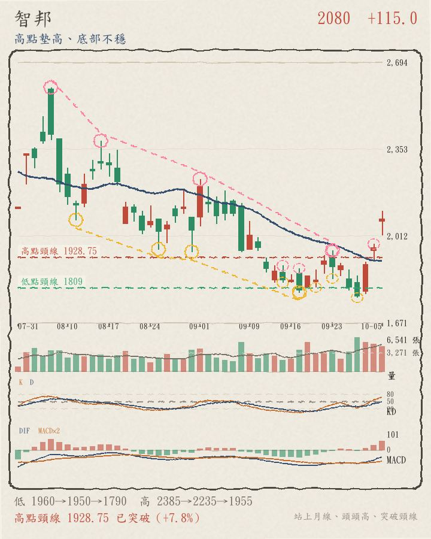
12:31 盤中 2080（+5.85%），比加權指數強 3.36 個百分點、站上月線 1915.5，已突破高點頸線 1928.75，高點還在墊高（但底部沒同步墊高）。
- 月線位置：現價 2080 在月線 1915.5 之上（+8.6%）；5 日線 1869 也在月線之下（短均在下）；月線向下
- 量能：以已過交易時間推估，今天成交量約是 20 日均量的 1.73 倍（爆量），比 20 日均量大不少；上漲又量增，量價配合
- 關鍵價位：高點頸線 1928.75 已站上；前一交易日高點 1980（高於 5.1%）；今天盤中高點 2110（低於 1.4%）；今天盤中低點 2015（高於 3.2%）
- 轉折結構：高點 2385、2235、1955 墊高（頭頭高），但低點 1960、1950、1790 沒有同步墊高；還沒確認的轉折低點 09-23 1845、09-30 1770；還沒確認的轉折高點 09-23 1955、10-02 1980（圖上虛線小圈）
合晶 6182 上櫃
132 -3.0（-2.22%）
高點墊高、底部不穩 盤中成交值 99.34 億・全榜第 29 名（上櫃第 6 名）・相對大盤 -4.71
好條件 4/8：站上月線、月線向上、頭頭高、突破頸線
不好條件 4/8：今日下跌、相對大盤弱、量增下跌（出貨）、貼近今日低點（1% 內）
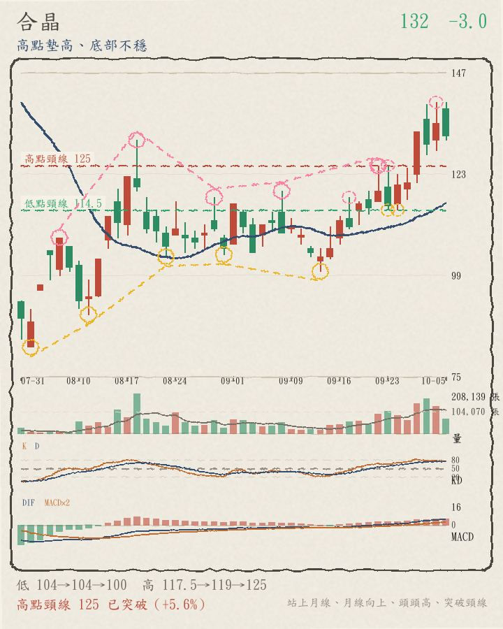
12:31 盤中 132（-2.22%），比加權指數弱 4.71 個百分點、站上月線 114.8，已突破高點頸線 125，高點還在墊高（但底部沒同步墊高）。
- 月線位置：現價 132 在月線 114.8 之上（+15.0%）；5 日線 127.9 也在月線之上（短均在上）；月線向上
- 量能：以已過交易時間推估，今天成交量約是 20 日均量的 1.49 倍（量增），比 20 日均量大不少；下跌卻量增，量價背離
- 關鍵價位：高點頸線 125 已站上；前一交易日高點 140（低於 5.7%）；今天盤中高點 140（低於 5.7%）；今天盤中低點 131（高於 0.8%）
- 轉折結構：高點 117.5、119、125 墊高（頭頭高），但低點 103.5、104、100 沒有同步墊高；還沒確認的轉折低點 09-23 114.5、09-24 114.5；還沒確認的轉折高點 09-23 125、10-02 140（圖上虛線小圈）
南茂 8150 上市
124.5 -2.5（-1.97%）
高點墊高、底部不穩 盤中成交值 98.5 億・全榜第 30 名（上市第 24 名）・相對大盤 -4.46
好條件 3/8：站上月線、月線向上、頭頭高
不好條件 3/8：今日下跌、相對大盤弱、量增下跌（出貨）
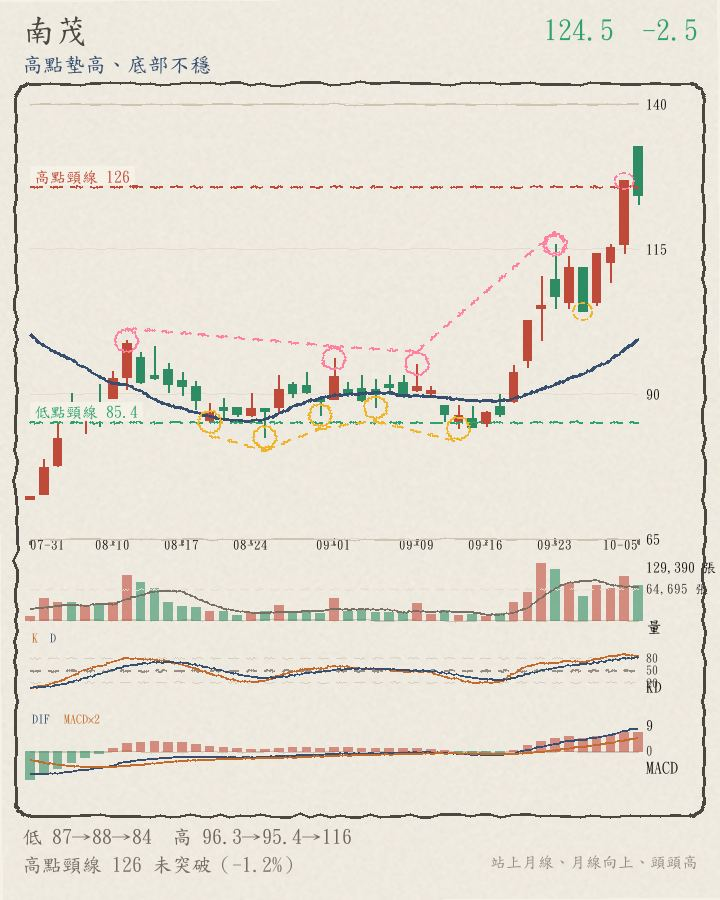
12:31 盤中 124.5（-1.97%），比加權指數弱 4.46 個百分點、站上月線 97.885，離高點頸線 126 還差 1.2%，高點還在墊高（但底部沒同步墊高）。
- 月線位置：現價 124.5 在月線 97.885 之上（+27.2%）；5 日線 114.7 也在月線之上（短均在上）；月線向上
- 量能：以已過交易時間推估，今天成交量約是 20 日均量的 2.41 倍（爆量），比 20 日均量大不少；下跌卻量增，量價背離
- 關鍵價位：高點頸線 126 還沒突破，差 1.2%；前一交易日高點 127（低於 2.0%）；今天盤中高點 133（低於 6.4%）；今天盤中低點 123（高於 1.2%）
- 轉折結構：高點 96.3、95.4、116 墊高（頭頭高），但低點 86.6、87.9、84.3 沒有同步墊高；還沒確認的轉折低點 09-29 104.5；還沒確認的轉折高點 09-23 116、10-02 127（圖上虛線小圈）
鴻海 2317 上市
254 +3.0（+1.20%）
底部墊高、未過前高 盤中成交值 93.16 億・全榜第 31 名（上市第 25 名）・相對大盤 -1.29
好條件 5/8：站上月線、底底高、突破頸線、攻擊量（量增＋上漲）、守住今日高檔（距今日高點 1% 內）
不好條件 3/8：相對大盤弱、貼近今日低點（1% 內）、月線下彎
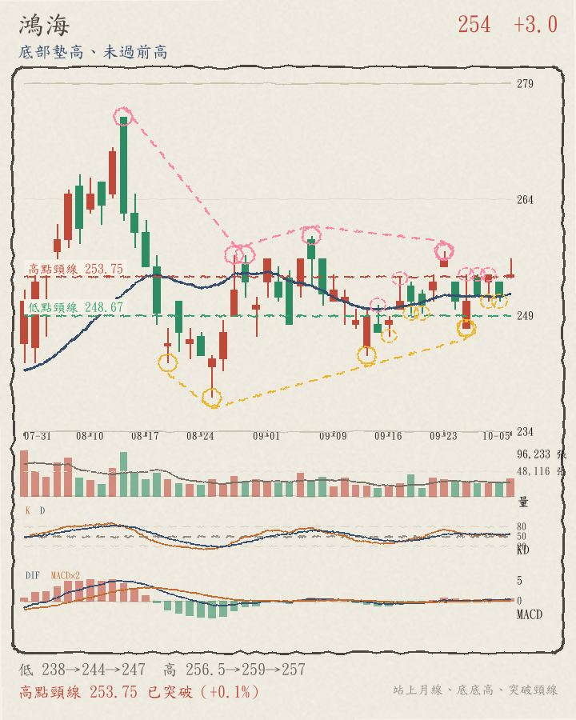
12:31 盤中 254（+1.20%），比加權指數弱 1.29 個百分點、站上月線 251.125，已突破高點頸線 253.75，底部還在墊高（但高點沒同步創高）。
- 月線位置：現價 254 在月線 251.125 之上（+1.1%）；5 日線 251.5 也在月線之上（短均在上）；月線向下
- 量能：以已過交易時間推估，今天成交量約是 20 日均量的 1.59 倍（爆量），比 20 日均量大不少；上漲又量增，量價配合
- 關鍵價位：高點頸線 253.75 已站上；前一交易日高點 253（高於 0.4%）；今天盤中高點 256（低於 0.8%）；今天盤中低點 253.5（高於 0.2%）
- 轉折結構：低點 238、243.5、247 墊高（底底高），但高點 256.5、259、257 沒有同步創高；還沒確認的轉折低點 10-01 250.5、10-02 250.5；還沒確認的轉折高點 09-30 254、10-01 254（圖上虛線小圈）
世芯-KY 3661 上市
4000 +190.0（+4.99%）
區間或轉弱 盤中成交值 88.4 億・全榜第 32 名（上市第 26 名）・相對大盤 +2.50
好條件 4/8：站上月線、突破頸線、相對大盤強、攻擊量（量增＋上漲）
不好條件 1/8：月線下彎
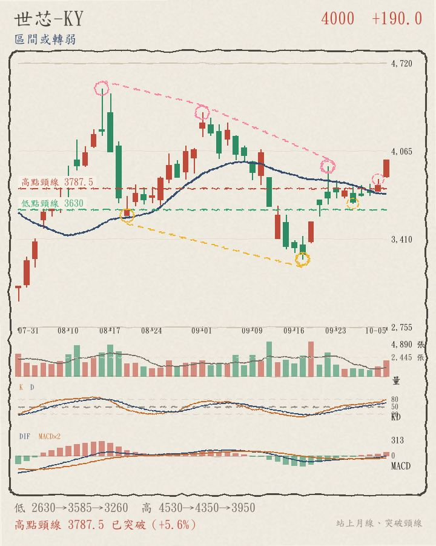
12:31 盤中 4000（+4.99%），比加權指數強 2.50 個百分點、站上月線 3749.25，已突破高點頸線 3787.5，轉折還沒走出明顯方向。
- 月線位置：現價 4000 在月線 3749.25 之上（+6.7%）；5 日線 3754 也在月線之上（短均在上）；月線向下
- 量能：以已過交易時間推估，今天成交量約是 20 日均量的 1.30 倍（量增），比 20 日均量大不少；上漲又量增，量價配合
- 關鍵價位：高點頸線 3787.5 已站上；前一交易日高點 3855（高於 3.8%）；今天盤中高點 4000（高於 0.0%）；今天盤中低點 3870（高於 3.4%）
- 轉折結構：低點 2630、3585、3260 與高點 4530、4350、3950 都沒有明顯遞增，屬於區間震盪或轉弱；還沒確認的轉折低點 09-17 3260、09-29 3675；還沒確認的轉折高點 09-22 3950、10-02 3855（圖上虛線小圈）
強茂 2481 上市
181.5 +7.0（+4.01%）
區間或轉弱 盤中成交值 87.44 億・全榜第 33 名（上市第 27 名）・相對大盤 +1.52
好條件 5/8：站上月線、月線向上、突破頸線、相對大盤強、攻擊量（量增＋上漲）
不好條件 0/8：無
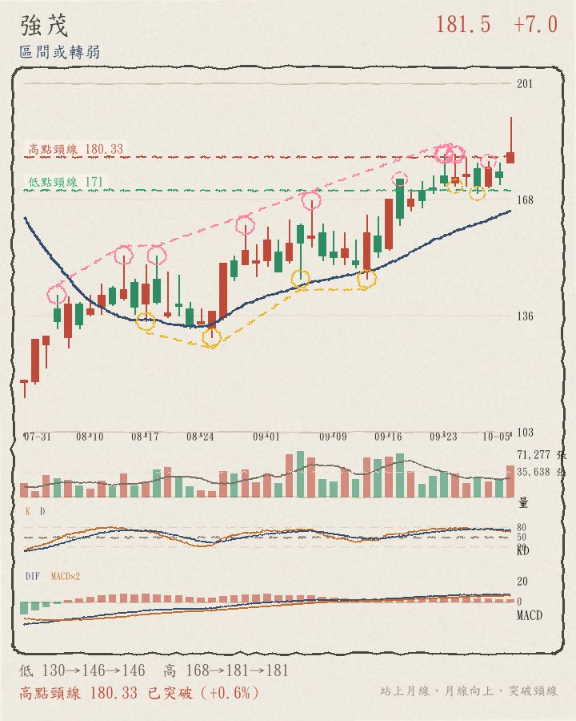
12:31 盤中 181.5（+4.01%），比加權指數強 1.52 個百分點、站上月線 163.875，已突破高點頸線 180.33，轉折還沒走出明顯方向。
- 月線位置：現價 181.5 在月線 163.875 之上（+10.8%）；5 日線 174.8 也在月線之上（短均在上）；月線向上
- 量能：以已過交易時間推估，今天成交量約是 20 日均量的 1.50 倍（爆量），比 20 日均量大不少；上漲又量增，量價配合
- 關鍵價位：高點頸線 180.33 已站上；前一交易日高點 178.5（高於 1.7%）；今天盤中高點 191.5（低於 5.2%）；今天盤中低點 178.5（高於 1.7%）
- 轉折結構：低點 129.5、146、146 與高點 168、181、181 都沒有明顯遞增，屬於區間震盪或轉弱；還沒確認的轉折低點 09-24 172、09-30 170；還沒確認的轉折高點 09-24 181、10-01 179（圖上虛線小圈）
金像電 2368 上市
1215 +110.0（+9.95%）
高點墊高、底部不穩 盤中成交值 78.84 億・全榜第 34 名（上市第 28 名）・相對大盤 +7.46
好條件 4/8：站上月線、頭頭高、突破頸線、相對大盤強
不好條件 1/8：月線下彎
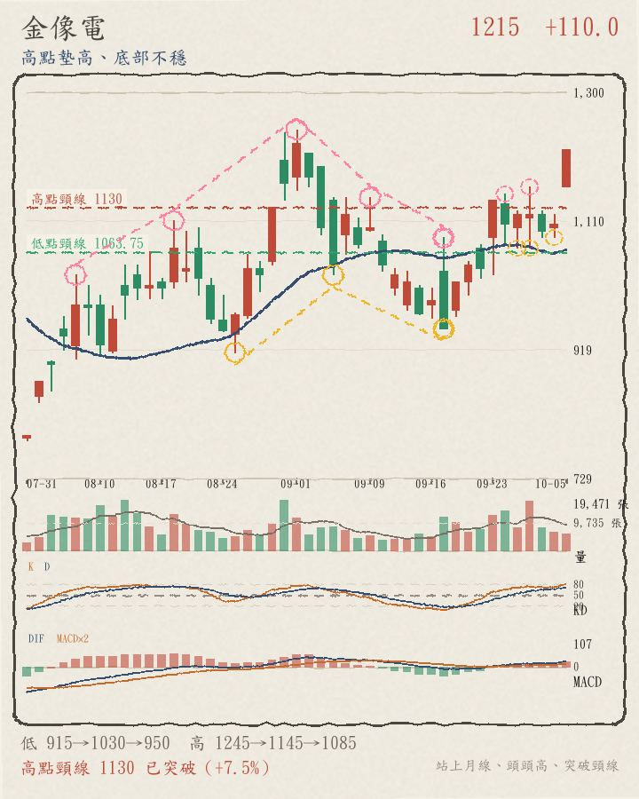
12:31 盤中 1215（+9.95%），比加權指數強 7.46 個百分點、站上月線 1061.95，已突破高點頸線 1130，高點還在墊高（但底部沒同步墊高）。
- 月線位置：現價 1215 在月線 1061.95 之上（+14.4%）；5 日線 1109 也在月線之上（短均在上）；月線向下
- 量能：以已過交易時間推估，今天成交量約是 20 日均量的 0.98 倍（量平），跟 20 日均量差不多
- 關鍵價位：高點頸線 1130 已站上；前一交易日高點 1120（高於 8.5%）；今天盤中高點 1215（高於 0.0%）；今天盤中低點 1160（高於 4.7%）
- 轉折結構：高點 1245、1145、1085 墊高（頭頭高），但低點 915、1030、950 沒有同步墊高；還沒確認的轉折低點 09-30 1070、10-02 1085；還沒確認的轉折高點 09-24 1150、09-30 1160（圖上虛線小圈）
力積電 6770 上市
75.9 -0.6（-0.78%）
高點墊高、底部不穩 盤中成交值 77.05 億・全榜第 35 名（上市第 29 名）・相對大盤 -3.27
好條件 4/8：站上月線、月線向上、頭頭高、突破頸線
不好條件 3/8：今日下跌、相對大盤弱、貼近今日低點（1% 內）
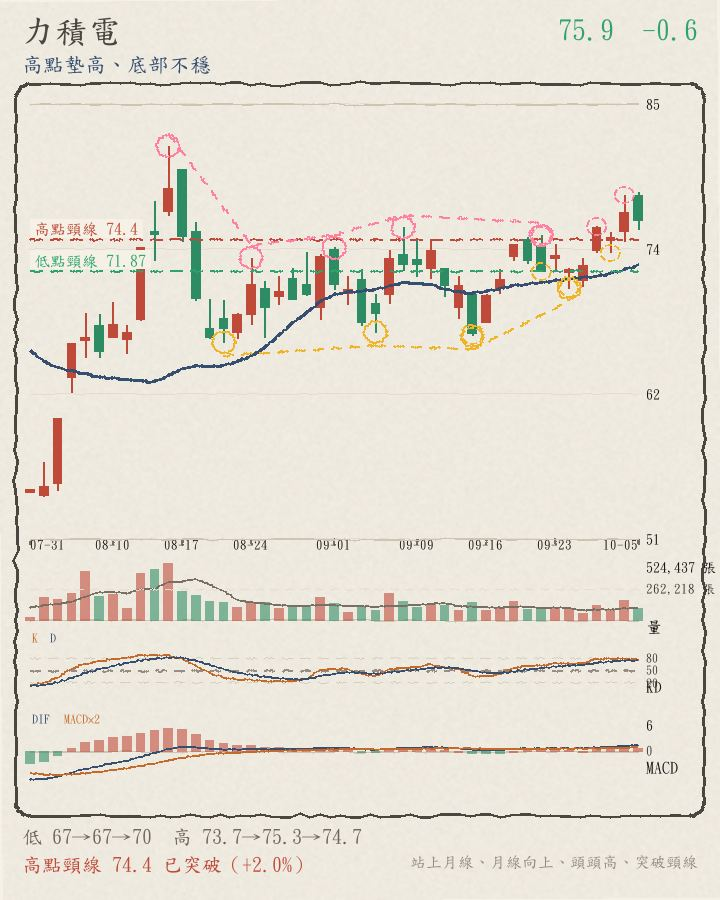
12:31 盤中 75.9（-0.78%），比加權指數弱 3.27 個百分點、站上月線 71.955，已突破高點頸線 74.4，高點還在墊高（但底部沒同步墊高）。
- 月線位置：現價 75.9 在月線 71.955 之上（+5.5%）；5 日線 74.12 也在月線之上（短均在上）；月線向上
- 量能：以已過交易時間推估，今天成交量約是 20 日均量的 1.09 倍（量平），比 20 日均量大一些
- 關鍵價位：高點頸線 74.4 已站上；前一交易日高點 77.9（低於 2.6%）；今天盤中高點 78.1（低於 2.8%）；今天盤中低點 75.2（高於 0.9%）
- 轉折結構：高點 73.7、75.3、74.7 墊高（頭頭高），但低點 67、66.7、70.5 沒有同步墊高；還沒確認的轉折低點 09-24 70.5、10-01 73.3；還沒確認的轉折高點 09-30 75.4、10-02 77.9（圖上虛線小圈）
緯創 3231 上市
189.5 +3.0（+1.61%）
高點墊高、底部不穩 盤中成交值 75.84 億・全榜第 36 名（上市第 30 名）・相對大盤 -0.88
好條件 3/8：站上月線、月線向上、頭頭高
不好條件 1/8：相對大盤弱
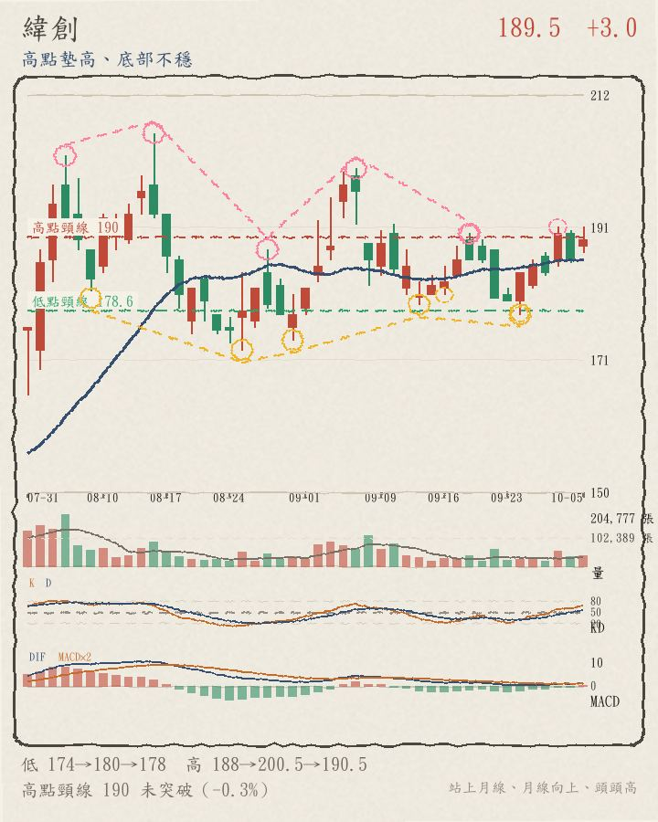
12:31 盤中 189.5（+1.61%），比加權指數弱 0.88 個百分點、站上月線 186.375，離高點頸線 190 還差 0.3%，高點還在墊高（但底部沒同步墊高）。
- 月線位置：現價 189.5 在月線 186.375 之上（+1.7%）；5 日線 186.3 也在月線之下（短均在下）；月線向上
- 量能：以已過交易時間推估，今天成交量約是 20 日均量的 0.97 倍（量平），跟 20 日均量差不多
- 關鍵價位：高點頸線 190 還沒突破，差 0.3%；前一交易日高點 191（低於 0.8%）；今天盤中高點 191.5（低於 1.0%）；今天盤中低點 187.5（高於 1.1%）
- 轉折結構：高點 188、200.5、190.5 墊高（頭頭高），但低點 174、179.5、178 沒有同步墊高；還沒確認的轉折低點 09-16 181、09-24 178；還沒確認的轉折高點 09-18 190.5、10-01 191.5（圖上虛線小圈）
光寶科 2301 上市
298 +16.5（+5.86%）
區間或轉弱 盤中成交值 75.7 億・全榜第 37 名（上市第 31 名）・相對大盤 +3.37
好條件 4/8：站上月線、突破頸線、相對大盤強、攻擊量（量增＋上漲）
不好條件 1/8：月線下彎
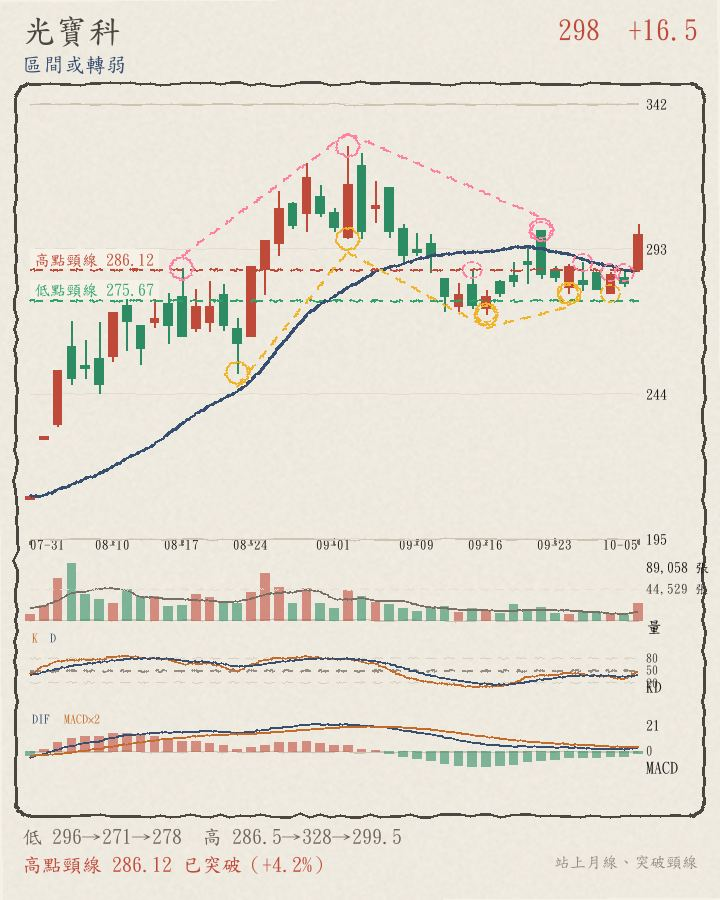
12:31 盤中 298（+5.86%），比加權指數強 3.37 個百分點、站上月線 285.8，已突破高點頸線 286.12，轉折還沒走出明顯方向。
- 月線位置：現價 298 在月線 285.8 之上（+4.3%）；5 日線 282.7 也在月線之下（短均在下）；月線向下
- 量能：以已過交易時間推估，今天成交量約是 20 日均量的 1.74 倍（爆量），比 20 日均量大不少；上漲又量增，量價配合
- 關鍵價位：高點頸線 286.12 已站上；前一交易日高點 285（高於 4.6%）；今天盤中高點 301.5（低於 1.2%）；今天盤中低點 285.5（高於 4.4%）
- 轉折結構：低點 296.5、271、278 與高點 286.5、328、299.5 都沒有明顯遞增，屬於區間震盪或轉弱；還沒確認的轉折低點 09-24 278、10-01 278；還沒確認的轉折高點 10-01 285、10-02 285（圖上虛線小圈）
富喬 1815 上櫃
125.5 +4.5（+3.72%）
底部墊高、未過前高 盤中成交值 67.71 億・全榜第 38 名（上櫃第 7 名）・相對大盤 +1.23
好條件 5/8：站上月線、底底高、突破頸線、相對大盤強、攻擊量（量增＋上漲）
不好條件 1/8：月線下彎
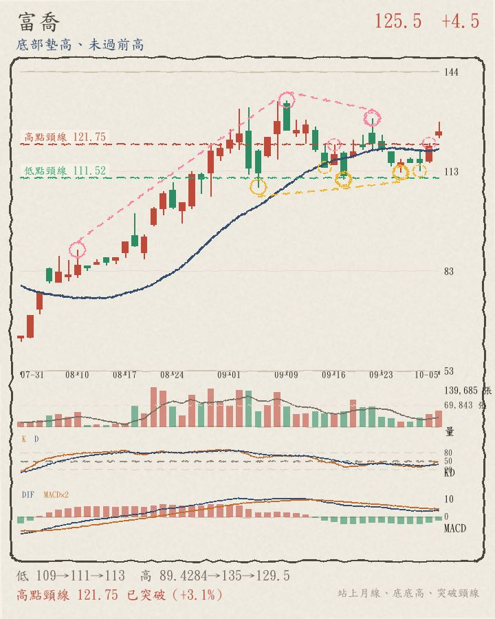
12:31 盤中 125.5（+3.72%），比加權指數強 1.23 個百分點、站上月線 119.576，已突破高點頸線 121.75，底部還在墊高（但高點沒同步創高）。
- 月線位置：現價 125.5 在月線 119.576 之上（+5.0%）；5 日線 117 也在月線之下（短均在下）；月線向下
- 量能：以已過交易時間推估，今天成交量約是 20 日均量的 1.14 倍（量增），比 20 日均量大一些；上漲又量增，量價配合
- 關鍵價位：高點頸線 121.75 已站上；前一交易日高點 122（高於 2.9%）；今天盤中高點 128.5（低於 2.3%）；今天盤中低點 123.5（高於 1.6%）
- 轉折結構：低點 108.571、111、113 墊高（底底高），但高點 89.4284、135、129.5 沒有同步創高；還沒確認的轉折低點 09-29 113、10-01 113.5；還沒確認的轉折高點 09-22 129.5、10-02 122（圖上虛線小圈）
萬潤 6187 上櫃
1490 +135.0（+9.96%）
高點墊高、底部不穩 盤中成交值 65.53 億・全榜第 39 名（上櫃第 8 名）・相對大盤 +7.47
好條件 5/8：站上月線、頭頭高、突破頸線、相對大盤強、攻擊量（量增＋上漲）
不好條件 1/8：月線下彎
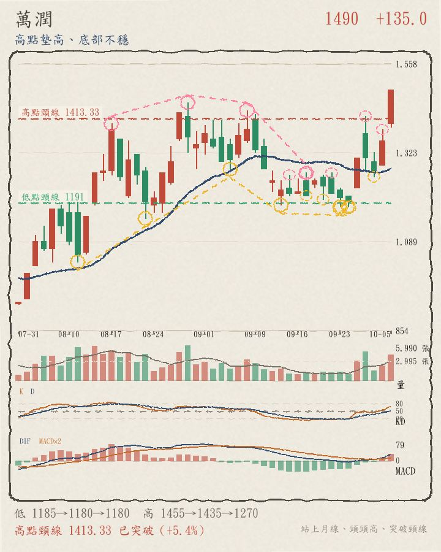
12:31 盤中 1490（+9.96%），比加權指數強 7.47 個百分點、站上月線 1272，已突破高點頸線 1413.33，高點還在墊高（但底部沒同步墊高）。
- 月線位置：現價 1490 在月線 1272 之上（+17.1%）；5 日線 1289 也在月線之上（短均在上）；月線向下
- 量能：以已過交易時間推估，今天成交量約是 20 日均量的 2.81 倍（爆量），比 20 日均量大不少；上漲又量增，量價配合
- 關鍵價位：高點頸線 1413.33 已站上；前一交易日高點 1385（高於 7.6%）；今天盤中高點 1490（高於 0.0%）；今天盤中低點 1390（高於 7.2%）
- 轉折結構：高點 1455、1435、1270 墊高（頭頭高），但低點 1185、1180、1180 沒有同步墊高；還沒確認的轉折低點 09-24 1180、10-01 1260；還沒確認的轉折高點 09-30 1420、10-02 1385（圖上虛線小圈）
晶技 3042 上市
222.5 -8.0（-3.47%）
高點墊高、底部不穩 盤中成交值 64.26 億・全榜第 40 名（上市第 32 名）・相對大盤 -5.96
好條件 4/8：站上月線、月線向上、頭頭高、突破頸線
不好條件 4/8：今日下跌、相對大盤弱、量增下跌（出貨）、貼近今日低點（1% 內）
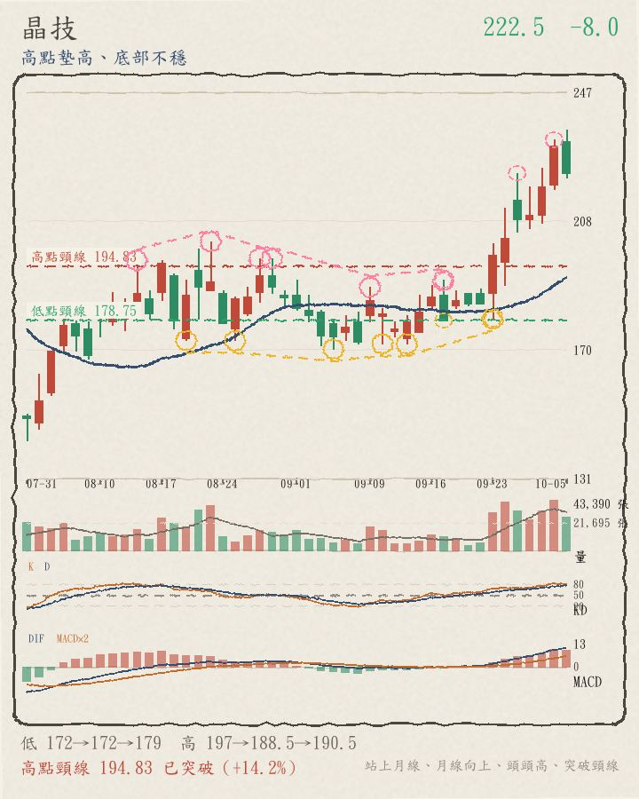
12:31 盤中 222.5（-3.47%），比加權指數弱 5.96 個百分點、站上月線 189，已突破高點頸線 194.83，高點還在墊高（但底部沒同步墊高）。
- 月線位置：現價 222.5 在月線 189 之上（+17.7%）；5 日線 214.1 也在月線之上（短均在上）；月線向上
- 量能：以已過交易時間推估，今天成交量約是 20 日均量的 2.36 倍（爆量），比 20 日均量大不少；下跌卻量增，量價背離
- 關鍵價位：高點頸線 194.83 已站上；前一交易日高點 232.5（低於 4.3%）；今天盤中高點 235.5（低於 5.5%）；今天盤中低點 221（高於 0.7%）
- 轉折結構：高點 197、188.5、190.5 墊高（頭頭高），但低點 171.5、171.5、179 沒有同步墊高；還沒確認的轉折低點 09-17 178.5、09-23 179；還沒確認的轉折高點 09-29 222.5、10-02 232.5（圖上虛線小圈）
健策 3653 上市
7300 +500.0（+7.35%）
區間或轉弱 盤中成交值 63.66 億・全榜第 41 名（上市第 33 名）・相對大盤 +4.86
好條件 4/8：站上月線、月線向上、突破頸線、相對大盤強
不好條件 0/8：無
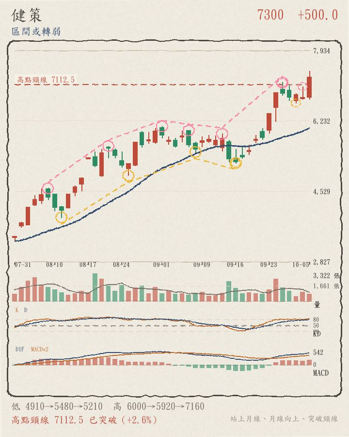
12:31 盤中 7300（+7.35%），比加權指數強 4.86 個百分點、站上月線 5979，已突破高點頸線 7112.5，轉折還沒走出明顯方向。
- 月線位置：現價 7300 在月線 5979 之上（+22.1%）；5 日線 6858 也在月線之上（短均在上）；月線向上
- 量能：以已過交易時間推估，今天成交量約是 20 日均量的 0.97 倍（量平），跟 20 日均量差不多
- 關鍵價位：高點頸線 7112.5 已站上；前一交易日高點 7065（高於 3.3%）；今天盤中高點 7440（低於 1.9%）；今天盤中低點 6760（高於 8.0%）
- 轉折結構：低點 4910、5480、5210 與高點 6000、5920、7160 都沒有明顯遞增，屬於區間震盪或轉弱；還沒確認的轉折低點 09-16 5210、10-01 6665；還沒確認的轉折高點 09-29 7160、10-02 7065（圖上虛線小圈）
頎邦 6147 上櫃
216 -7.0（-3.14%）
底部墊高、未過前高 盤中成交值 60.43 億・全榜第 42 名（上櫃第 9 名）・相對大盤 -5.63
好條件 3/8：站上月線、月線向上、底底高
不好條件 4/8：今日下跌、相對大盤弱、貼近今日低點（1% 內）、跌破昨日低點
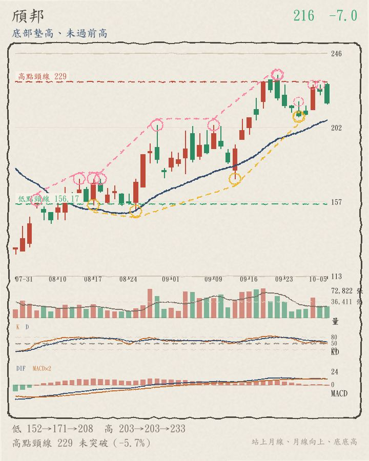
12:31 盤中 216（-3.14%），比加權指數弱 5.63 個百分點、站上月線 204.55，離高點頸線 229 還差 5.7%，底部還在墊高（但高點沒同步創高）。
- 月線位置：現價 216 在月線 204.55 之上（+5.6%）；5 日線 216 也在月線之上（短均在上）；月線向上
- 量能：以已過交易時間推估，今天成交量約是 20 日均量的 0.78 倍（量平），比 20 日均量少很多
- 關鍵價位：高點頸線 229 還沒突破，差 5.7%；前一交易日高點 227（低於 4.8%）；今天盤中高點 228（低於 5.3%）；今天盤中低點 215.5（高於 0.2%）
- 轉折結構：低點 152、171、208 墊高（底底高），但高點 203、203、233 沒有同步創高；還沒確認的轉折低點 09-29 208；還沒確認的轉折高點 10-01 227、10-02 227（圖上虛線小圈）
川湖 2059 上市
13355 +1210.0（+9.96%）
區間或轉弱 盤中成交值 59.96 億・全榜第 43 名（上市第 34 名）・相對大盤 +7.47
好條件 4/8：站上月線、突破頸線、相對大盤強、攻擊量（量增＋上漲）
不好條件 1/8：月線下彎
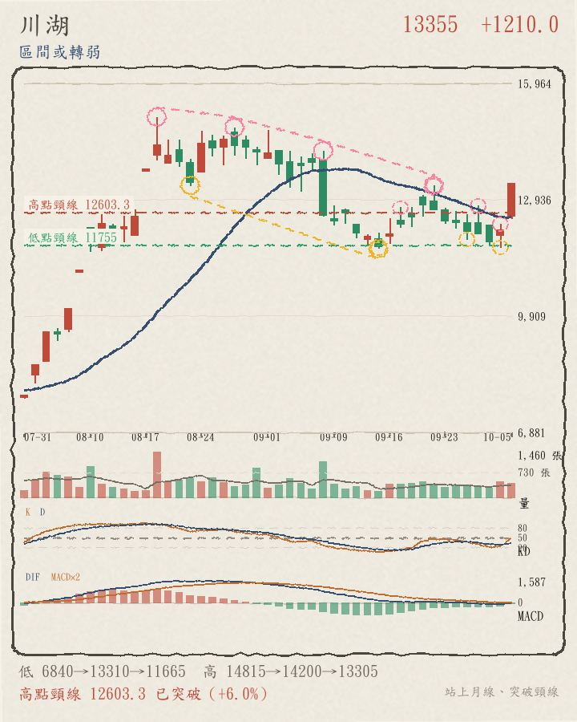
12:31 盤中 13355（+9.96%），比加權指數強 7.47 個百分點、站上月線 12485.8，已突破高點頸線 12603.3，轉折還沒走出明顯方向。
- 月線位置：現價 13355 在月線 12485.8 之上（+7.0%）；5 日線 12100 也在月線之下（短均在下）；月線向下
- 量能：以已過交易時間推估，今天成交量約是 20 日均量的 1.40 倍（量增），比 20 日均量大不少；上漲又量增，量價配合
- 關鍵價位：高點頸線 12603.3 已站上；前一交易日高點 12295（高於 8.6%）；今天盤中高點 13355（高於 0.0%）；今天盤中低點 12450（高於 7.3%）
- 轉折結構：低點 6840、13310、11665 與高點 14815、14200、13305 都沒有明顯遞增，屬於區間震盪或轉弱；還沒確認的轉折低點 09-29 11900、10-02 11700；還沒確認的轉折高點 09-30 12785、10-02 12295（圖上虛線小圈）
力成 6239 上市
297.5 -10.5（-3.41%）
高點墊高、底部不穩 盤中成交值 58.24 億・全榜第 44 名（上市第 35 名）・相對大盤 -5.90
好條件 4/8：站上月線、月線向上、頭頭高、突破頸線
不好條件 4/8：今日下跌、相對大盤弱、量增下跌（出貨）、貼近今日低點（1% 內）
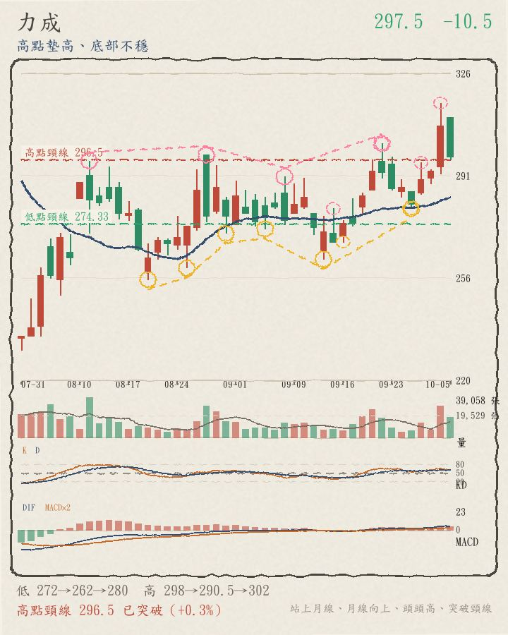
12:31 盤中 297.5（-3.41%），比加權指數弱 5.90 個百分點、站上月線 282.3，已突破高點頸線 296.5，高點還在墊高（但底部沒同步墊高）。
- 月線位置：現價 297.5 在月線 282.3 之上（+5.4%）；5 日線 291.6 也在月線之上（短均在上）；月線向上
- 量能：以已過交易時間推估，今天成交量約是 20 日均量的 2.19 倍（爆量），比 20 日均量大不少；下跌卻量增，量價背離
- 關鍵價位：高點頸線 296.5 已站上；前一交易日高點 316（低於 5.9%）；今天盤中高點 311（低於 4.3%）；今天盤中低點 296.5（高於 0.3%）
- 轉折結構：高點 298、290.5、302 墊高（頭頭高），但低點 272.5、262、279.5 沒有同步墊高；還沒確認的轉折低點 09-16 268、09-29 279.5；還沒確認的轉折高點 09-30 295.5、10-02 316（圖上虛線小圈）
尖點 8021 上市
564 +11.0（+1.99%）
高點墊高、底部不穩 盤中成交值 57.93 億・全榜第 45 名（上市第 36 名）・相對大盤 -0.50
好條件 5/8：站上月線、月線向上、頭頭高、突破頸線、攻擊量（量增＋上漲）
不好條件 1/8：相對大盤弱
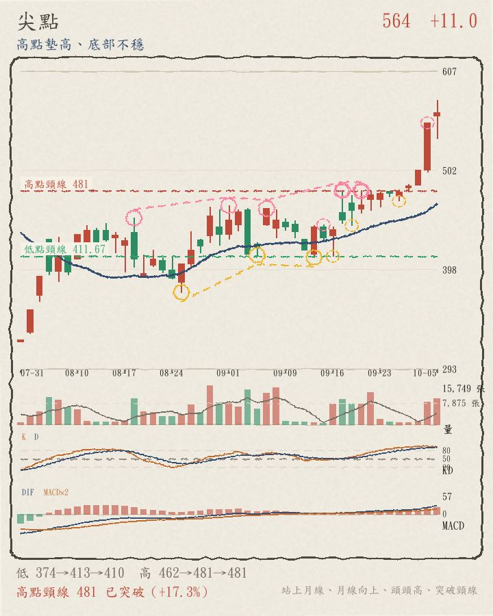
12:31 盤中 564（+1.99%），比加權指數弱 0.50 個百分點、站上月線 459.575，已突破高點頸線 481，高點還在墊高（但底部沒同步墊高）。
- 月線位置：現價 564 在月線 459.575 之上（+22.7%）；5 日線 500.4 也在月線之上（短均在上）；月線向上
- 量能：以已過交易時間推估，今天成交量約是 20 日均量的 2.34 倍（爆量），比 20 日均量大不少；上漲又量增，量價配合
- 關鍵價位：高點頸線 481 已站上；前一交易日高點 553（高於 2.0%）；今天盤中高點 577（低於 2.3%）；今天盤中低點 536（高於 5.2%）
- 轉折結構：高點 462、481、481 墊高（頭頭高），但低點 373.5、413、410.5 沒有同步墊高；還沒確認的轉折低點 09-18 444、09-29 470；還沒確認的轉折高點 09-21 481、10-02 553（圖上虛線小圈）
光聖 6442 上市
1695 +70.0（+4.31%）
區間或轉弱 盤中成交值 57.82 億・全榜第 46 名（上市第 37 名）・相對大盤 +1.82
好條件 4/8：站上月線、突破頸線、相對大盤強、攻擊量（量增＋上漲）
不好條件 1/8：月線下彎
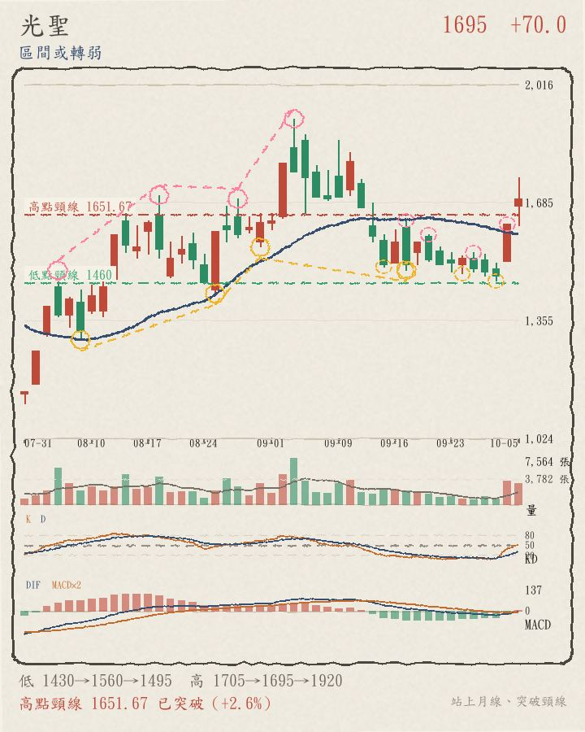
12:31 盤中 1695（+4.31%），比加權指數強 1.82 個百分點、站上月線 1601.25，已突破高點頸線 1651.67，轉折還沒走出明顯方向。
- 月線位置：現價 1695 在月線 1601.25 之上（+5.8%）；5 日線 1525 也在月線之下（短均在下）；月線向下
- 量能：以已過交易時間推估，今天成交量約是 20 日均量的 1.84 倍（爆量），比 20 日均量大不少；上漲又量增，量價配合
- 關鍵價位：高點頸線 1651.67 已站上；前一交易日高點 1625（高於 4.3%）；今天盤中高點 1755（低於 3.4%）；今天盤中低點 1620（高於 4.6%）
- 轉折結構：低點 1430、1560、1495 與高點 1705、1695、1920 都沒有明顯遞增，屬於區間震盪或轉弱；還沒確認的轉折低點 09-24 1485、10-01 1465；還沒確認的轉折高點 09-29 1545、10-02 1625（圖上虛線小圈）
禾伸堂 3026 上市
822 -13.0（-1.56%）
上升趨勢（底底高＋頭頭高） 盤中成交值 57.48 億・全榜第 47 名（上市第 38 名）・相對大盤 -4.05
好條件 4/8：站上月線、月線向上、底底高、頭頭高
不好條件 4/8：今日下跌、相對大盤弱、貼近今日低點（1% 內）、跌破昨日低點
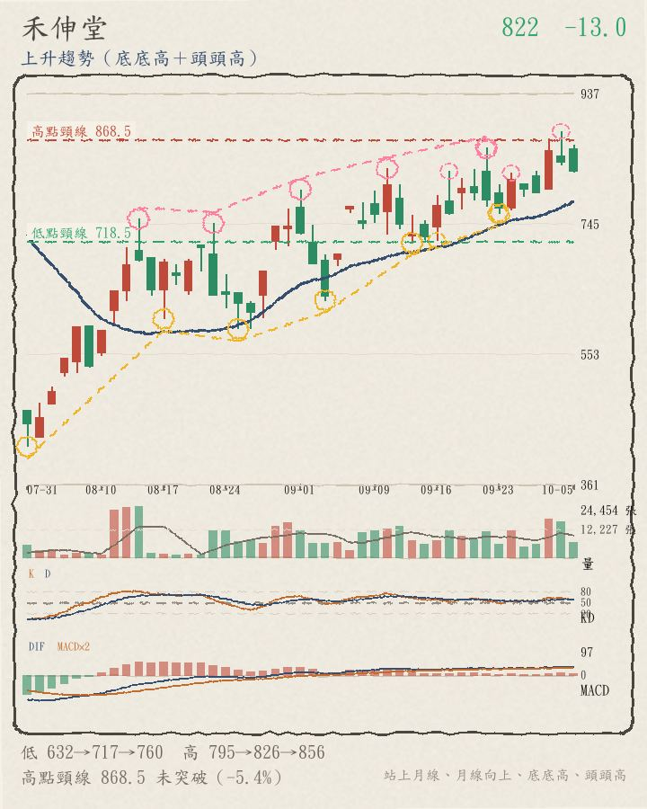
12:31 盤中 822（-1.56%），比加權指數弱 4.05 個百分點、站上月線 768.55，離高點頸線 868.5 還差 5.4%，轉折結構仍是底底高＋頭頭高。
- 月線位置：現價 822 在月線 768.55 之上（+7.0%）；5 日線 816.8 也在月線之上（短均在上）；月線向上
- 量能：以已過交易時間推估，今天成交量約是 20 日均量的 0.94 倍（量平），比 20 日均量少一些
- 關鍵價位：高點頸線 868.5 還沒突破，差 5.4%；前一交易日高點 881（低於 6.7%）；今天盤中高點 861（低於 4.5%）；今天盤中低點 821（高於 0.1%）
- 轉折結構：低點 632、717、760 一路墊高、高點 795、826、856 也一路墊高，是底底高＋頭頭高；還沒確認的轉折低點 09-16 720、09-23 760；還沒確認的轉折高點 09-24 820、10-02 881（圖上虛線小圈）
雙鴻 3324 上櫃
1530 +25.0（+1.66%）
高點墊高、底部不穩 盤中成交值 55.49 億・全榜第 48 名（上櫃第 10 名）・相對大盤 -0.83
好條件 4/8：站上月線、月線向上、頭頭高、攻擊量（量增＋上漲）
不好條件 1/8：相對大盤弱
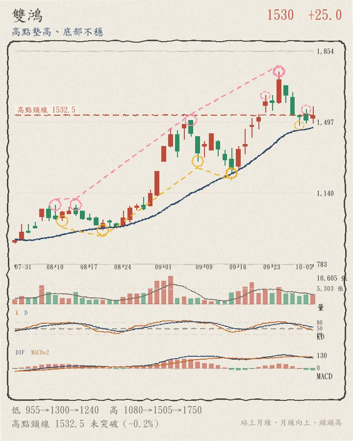
12:31 盤中 1530（+1.66%），比加權指數弱 0.83 個百分點、站上月線 1460.25，離高點頸線 1532.5 還差 0.2%，高點還在墊高（但底部沒同步墊高）。
- 月線位置：現價 1530 在月線 1460.25 之上（+4.8%）；5 日線 1580 也在月線之上（短均在上）；月線向上
- 量能：以已過交易時間推估，今天成交量約是 20 日均量的 1.20 倍（量增），比 20 日均量大不少；上漲又量增，量價配合
- 關鍵價位：高點頸線 1532.5 還沒突破，差 0.2%；前一交易日高點 1560（低於 1.9%）；今天盤中高點 1575（低於 2.9%）；今天盤中低點 1490（高於 2.7%）
- 轉折結構：高點 1080、1505、1750 墊高（頭頭高），但低點 955、1300、1240 沒有同步墊高；還沒確認的轉折低點 09-15 1240、10-01 1480；還沒確認的轉折高點 09-24 1750、10-02 1560（圖上虛線小圈）
中美晶 5483 上櫃
215.5 -6.0（-2.71%）
高點墊高、底部不穩 盤中成交值 55.43 億・全榜第 49 名（上櫃第 11 名）・相對大盤 -5.20
好條件 4/8：站上月線、月線向上、頭頭高、突破頸線
不好條件 4/8：今日下跌、相對大盤弱、量增下跌（出貨）、貼近今日低點（1% 內）
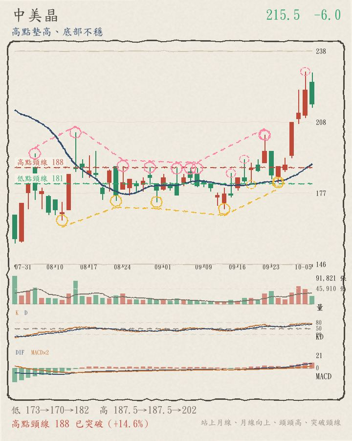
12:31 盤中 215.5（-2.71%），比加權指數弱 5.20 個百分點、站上月線 187.425，已突破高點頸線 188，高點還在墊高（但底部沒同步墊高）。
- 月線位置：現價 215.5 在月線 187.425 之上（+15.0%）；5 日線 203.6 也在月線之上（短均在上）；月線向上
- 量能：以已過交易時間推估，今天成交量約是 20 日均量的 1.88 倍（爆量），比 20 日均量大不少；下跌卻量增，量價背離
- 關鍵價位：高點頸線 188 已站上；前一交易日高點 229.5（低於 6.1%）；今天盤中高點 229（低於 5.9%）；今天盤中低點 214（高於 0.7%）
- 轉折結構：高點 187.5、187.5、202 墊高（頭頭高），但低點 173、170、181.5 沒有同步墊高；還沒確認的轉折低點 09-18 180.5、09-24 181.5；還沒確認的轉折高點 09-22 202、10-02 229.5（圖上虛線小圈）
台光電 2383 上市
5700 +515.0（+9.93%）
高點墊高、底部不穩 盤中成交值 53.92 億・全榜第 50 名（上市第 39 名）・相對大盤 +7.44
好條件 4/8：站上月線、頭頭高、突破頸線、相對大盤強
不好條件 1/8：月線下彎
12:31 盤中 5700（+9.93%），比加權指數強 7.44 個百分點、站上月線 5131.25，已突破高點頸線 5205，高點還在墊高（但底部沒同步墊高）。
- 月線位置：現價 5700 在月線 5131.25 之上（+11.1%）；5 日線 5013 也在月線之下（短均在下）；月線向下
- 量能：以已過交易時間推估，今天成交量約是 20 日均量的 0.66 倍（量縮），比 20 日均量少很多；上漲但量縮，量價背離
- 關鍵價位：高點頸線 5205 已站上；前一交易日高點 5190（高於 9.8%）；今天盤中高點 5700（高於 0.0%）；今天盤中低點 5600（高於 1.8%）
- 轉折結構：高點 5960、5645、5170 墊高（頭頭高），但低點 5255、5255、4635 沒有同步墊高；還沒確認的轉折低點 09-29 4870、10-01 4855；還沒確認的轉折高點 09-24 5170、10-02 5190（圖上虛線小圈）
玉晶光 3406 上市
1055 +94.0（+9.78%）
區間或轉弱 盤中成交值 53.41 億・全榜第 51 名（上市第 40 名）・相對大盤 +7.29
好條件 4/8：站上月線、突破頸線、相對大盤強、攻擊量（量增＋上漲）
不好條件 1/8：月線下彎
12:31 盤中 1055（+9.78%），比加權指數強 7.29 個百分點、站上月線 972.9，已突破高點頸線 1025，轉折還沒走出明顯方向。
- 月線位置：現價 1055 在月線 972.9 之上（+8.4%）；5 日線 916.8 也在月線之下（短均在下）；月線向下
- 量能：以已過交易時間推估，今天成交量約是 20 日均量的 1.24 倍（量增），比 20 日均量大不少；上漲又量增，量價配合
- 關鍵價位：高點頸線 1025 已站上；前一交易日高點 974（高於 8.3%）；今天盤中高點 1055（高於 0.0%）；今天盤中低點 971（高於 8.7%）
- 轉折結構：低點 961、906、869 與高點 1090、1140、1045 都沒有明顯遞增，屬於區間震盪或轉弱；還沒確認的轉折低點 09-29 869、10-01 871；還沒確認的轉折高點 09-21 1005、10-02 974（圖上虛線小圈）
致茂 2360 上市
2315 +125.0（+5.71%）
上升趨勢（底底高＋頭頭高） 盤中成交值 53.36 億・全榜第 52 名（上市第 41 名）・相對大盤 +3.22
好條件 7/8：站上月線、月線向上、底底高、頭頭高、突破頸線、相對大盤強、攻擊量（量增＋上漲）
不好條件 0/8：無
12:31 盤中 2315（+5.71%），比加權指數強 3.22 個百分點、站上月線 2196.25，已突破高點頸線 2203.33，轉折結構仍是底底高＋頭頭高。
- 月線位置：現價 2315 在月線 2196.25 之上（+5.4%）；5 日線 2177 也在月線之下（短均在下）；月線向上
- 量能：以已過交易時間推估，今天成交量約是 20 日均量的 1.31 倍（量增），比 20 日均量大不少；上漲又量增，量價配合
- 關鍵價位：高點頸線 2203.33 已站上；前一交易日高點 2225（高於 4.0%）；今天盤中高點 2355（低於 1.7%）；今天盤中低點 2215（高於 4.5%）
- 轉折結構：低點 1845、1875、2070 一路墊高、高點 2400、2490、2540 也一路墊高，是底底高＋頭頭高；還沒確認的轉折低點 09-16 2070、10-01 2025；還沒確認的轉折高點 09-22 2540、10-02 2225（圖上虛線小圈）
聯鈞 3450 上市
551 +8.0（+1.47%）
底部墊高、未過前高 盤中成交值 51.55 億・全榜第 53 名（上市第 42 名）・相對大盤 -1.02
好條件 3/8：站上月線、底底高、攻擊量（量增＋上漲）
不好條件 3/8：相對大盤弱、貼近今日低點（1% 內）、月線下彎
12:31 盤中 551（+1.47%），比加權指數弱 1.02 個百分點、站上月線 530.825，離高點頸線 554.25 還差 0.6%，底部還在墊高（但高點沒同步創高）。
- 月線位置：現價 551 在月線 530.825 之上（+3.8%）；5 日線 523.8 也在月線之下（短均在下）；月線向下
- 量能：以已過交易時間推估，今天成交量約是 20 日均量的 1.90 倍（爆量），比 20 日均量大不少；上漲又量增，量價配合
- 關鍵價位：高點頸線 554.25 還沒突破，差 0.6%；前一交易日高點 553（低於 0.4%）；今天盤中高點 574（低於 4.0%）；今天盤中低點 546（高於 0.9%）
- 轉折結構：低點 483、489、505 墊高（底底高），但高點 600、653、565 沒有同步創高；還沒確認的轉折低點 09-24 505、10-01 508；還沒確認的轉折高點 09-30 540、10-02 553（圖上虛線小圈）
騰輝電子-KY 6672 上市
454.5 +15.5（+3.53%）
上升趨勢（底底高＋頭頭高） 盤中成交值 50.57 億・全榜第 54 名（上市第 43 名）・相對大盤 +1.04
好條件 8/8：站上月線、月線向上、底底高、頭頭高、突破頸線、相對大盤強、攻擊量（量增＋上漲）、守住今日高檔（距今日高點 1% 內）
不好條件 0/8：無
12:31 盤中 454.5（+3.53%），比加權指數強 1.04 個百分點、站上月線 316.325，已突破高點頸線 316.17，轉折結構仍是底底高＋頭頭高。
- 月線位置：現價 454.5 在月線 316.325 之上（+43.7%）；5 日線 377.3 也在月線之上（短均在上）；月線向上
- 量能：以已過交易時間推估，今天成交量約是 20 日均量的 2.09 倍（爆量），比 20 日均量大不少；上漲又量增，量價配合
- 關鍵價位：高點頸線 316.17 已站上；前一交易日高點 439（高於 3.5%）；今天盤中高點 457.5（低於 0.7%）；今天盤中低點 435（高於 4.5%）
- 轉折結構：低點 255、261.5、285 一路墊高、高點 295、294.5、317.5 也一路墊高，是底底高＋頭頭高；還沒確認的轉折低點 09-17 285.5、09-23 298；還沒確認的轉折高點 09-24 337.5、10-02 439（圖上虛線小圈）
富世達 6805 上市
2405 +95.0（+4.11%）
區間或轉弱 盤中成交值 48.27 億・全榜第 55 名（上市第 44 名）・相對大盤 +1.62
好條件 4/8：站上月線、月線向上、相對大盤強、攻擊量（量增＋上漲）
不好條件 0/8：無
12:31 盤中 2405（+4.11%），比加權指數強 1.62 個百分點、站上月線 2284.25，離高點頸線 2735 還差 12.1%，轉折還沒走出明顯方向。
- 月線位置：現價 2405 在月線 2284.25 之上（+5.3%）；5 日線 2440 也在月線之上（短均在上）；月線向上
- 量能：以已過交易時間推估，今天成交量約是 20 日均量的 1.98 倍（爆量），比 20 日均量大不少；上漲又量增，量價配合
- 關鍵價位：高點頸線 2735 還沒突破，差 12.1%；前一交易日高點 2375（高於 1.3%）；今天盤中高點 2510（低於 4.2%）；今天盤中低點 2340（高於 2.8%）
- 轉折結構：低點 2030、2010、2010 與高點 2435、2325、2750 都沒有明顯遞增，屬於區間震盪或轉弱；還沒確認的轉折低點 09-29 2420、10-02 2300；還沒確認的轉折高點 09-23 2750、09-30 2720（圖上虛線小圈）
創意 3443 上市
8615 +715.0（+9.05%）
上升趨勢（底底高＋頭頭高） 盤中成交值 47.9 億・全榜第 56 名（上市第 45 名）・相對大盤 +6.56
好條件 7/8：站上月線、月線向上、底底高、頭頭高、突破頸線、相對大盤強、守住今日高檔（距今日高點 1% 內）
不好條件 0/8：無

12:31 盤中 8615（+9.05%），比加權指數強 6.56 個百分點、站上月線 6934.75，已突破高點頸線 5337.5，轉折結構仍是底底高＋頭頭高。
- 月線位置：現價 8615 在月線 6934.75 之上（+24.2%）；5 日線 8058 也在月線之上（短均在上）；月線向上
- 量能：以已過交易時間推估，今天成交量約是 20 日均量的 0.45 倍（量縮），比 20 日均量少很多；上漲但量縮，量價背離
- 關鍵價位：高點頸線 5337.5 已站上；前一交易日高點 8005（高於 7.6%）；今天盤中高點 8690（低於 0.9%）；今天盤中低點 8150（高於 5.7%）
- 轉折結構：低點 5205、5680、5850 一路墊高、高點 5990、6490、8545 也一路墊高，是底底高＋頭頭高；還沒確認的轉折低點 09-23 8200、10-01 7730；還沒確認的轉折高點 09-24 8545（圖上虛線小圈）
緯穎 6669 上市
2145 +60.0（+2.88%）
高點墊高、底部不穩 盤中成交值 44.34 億・全榜第 57 名（上市第 46 名）・相對大盤 +0.39
好條件 3/8：頭頭高、突破頸線、相對大盤強
不好條件 2/8：在月線之下、月線下彎
12:31 盤中 2145（+2.88%），比加權指數強 0.39 個百分點、跌破月線 2237.25，已突破高點頸線 2136.67，高點還在墊高（但底部沒同步墊高）。
- 月線位置：現價 2145 在月線 2237.25 之下（-4.1%）；5 日線 2100 也在月線之下（短均在下）；月線向下
- 量能：以已過交易時間推估，今天成交量約是 20 日均量的 0.74 倍（量平），比 20 日均量少很多；上漲但量縮，量價背離
- 關鍵價位：高點頸線 2136.67 已站上；前一交易日高點 2125（高於 0.9%）；今天盤中高點 2170（低於 1.2%）；今天盤中低點 2095（高於 2.4%）
- 轉折結構：高點 2145.64、2259.63、2875 墊高（頭頭高），但低點 2053.44、2085、2075 沒有同步墊高；還沒確認的轉折低點 09-24 2075、10-02 2080；還沒確認的轉折高點 09-30 2145、10-02 2125（圖上虛線小圈）
矽格 6257 上市
259.5 +2.0（+0.78%）
高點墊高、底部不穩 盤中成交值 42.94 億・全榜第 58 名（上市第 47 名）・相對大盤 -1.71
好條件 4/8：站上月線、月線向上、頭頭高、攻擊量（量增＋上漲）
不好條件 1/8：相對大盤弱
12:31 盤中 259.5（+0.78%），比加權指數弱 1.71 個百分點、站上月線 228.65，離高點頸線 263 還差 1.3%，高點還在墊高（但底部沒同步墊高）。
- 月線位置：現價 259.5 在月線 228.65 之上（+13.5%）；5 日線 249.5 也在月線之上（短均在上）；月線向上
- 量能：以已過交易時間推估，今天成交量約是 20 日均量的 1.75 倍（爆量），比 20 日均量大不少；上漲又量增，量價配合
- 關鍵價位：高點頸線 263 還沒突破，差 1.3%；前一交易日高點 266（低於 2.4%）；今天盤中高點 275（低於 5.6%）；今天盤中低點 253.5（高於 2.4%）
- 轉折結構：高點 228、225、263 墊高（頭頭高），但低點 207.5、204、235 沒有同步墊高；還沒確認的轉折低點 09-29 235；還沒確認的轉折高點 09-30 260、10-02 266（圖上虛線小圈）
漢磊 3707 上櫃
85.7 +0.5（+0.59%）
高點墊高、底部不穩 盤中成交值 42.76 億・全榜第 59 名（上櫃第 12 名）・相對大盤 -1.90
好條件 5/8：站上月線、月線向上、頭頭高、突破頸線、攻擊量（量增＋上漲）
不好條件 2/8：相對大盤弱、貼近今日低點（1% 內）
12:31 盤中 85.7（+0.59%），比加權指數弱 1.90 個百分點、站上月線 65.945，已突破高點頸線 65.43，高點還在墊高（但底部沒同步墊高）。
- 月線位置：現價 85.7 在月線 65.945 之上（+30.0%）；5 日線 76.82 也在月線之上（短均在上）；月線向上
- 量能：以已過交易時間推估，今天成交量約是 20 日均量的 5.40 倍（爆量），比 20 日均量大不少；上漲又量增，量價配合
- 關鍵價位：高點頸線 65.43 已站上；前一交易日高點 85.2（高於 0.6%）；今天盤中高點 91.7（低於 6.5%）；今天盤中低點 85.4（高於 0.4%）
- 轉折結構：高點 68.9、64.9、65.7 墊高（頭頭高），但低點 60.9、59.7、57.7 沒有同步墊高；還沒確認的轉折低點 09-24 68.9、09-30 71.7；還沒確認的轉折高點 09-23 76.4、10-02 85.2（圖上虛線小圈）
環宇-KY 4991 上櫃
519 -15.0（-2.81%）
高點墊高、底部不穩 盤中成交值 41.78 億・全榜第 60 名（上櫃第 13 名）・相對大盤 -5.30
好條件 3/8：站上月線、頭頭高、突破頸線
不好條件 4/8：今日下跌、相對大盤弱、量增下跌（出貨）、月線下彎
12:31 盤中 519（-2.81%），比加權指數弱 5.30 個百分點、站上月線 473.2，已突破高點頸線 511.5，高點還在墊高（但底部沒同步墊高）。
- 月線位置：現價 519 在月線 473.2 之上（+9.7%）；5 日線 489.1 也在月線之上（短均在上）；月線向下
- 量能：以已過交易時間推估，今天成交量約是 20 日均量的 2.54 倍（爆量），比 20 日均量大不少；下跌卻量增，量價背離
- 關鍵價位：高點頸線 511.5 已站上；前一交易日高點 534（低於 2.8%）；今天盤中高點 547（低於 5.1%）；今天盤中低點 519（高於 0.0%）
- 轉折結構：高點 560、520、508 墊高（頭頭高），但低點 418.5、417、436 沒有同步墊高；還沒確認的轉折低點 09-16 417、09-24 436；還沒確認的轉折高點 09-30 498、10-02 534（圖上虛線小圈）
新唐 4919 上市
156.5 -6.5（-3.99%）
高點墊高、底部不穩 盤中成交值 39.1 億・全榜第 61 名（上市第 48 名）・相對大盤 -6.48
好條件 4/8：站上月線、月線向上、頭頭高、突破頸線
不好條件 4/8：今日下跌、相對大盤弱、量增下跌（出貨）、貼近今日低點（1% 內）
12:31 盤中 156.5（-3.99%），比加權指數弱 6.48 個百分點、站上月線 126.15，已突破高點頸線 125.75，高點還在墊高（但底部沒同步墊高）。
- 月線位置：現價 156.5 在月線 126.15 之上（+24.1%）；5 日線 145 也在月線之上（短均在上）；月線向上
- 量能：以已過交易時間推估，今天成交量約是 20 日均量的 3.42 倍（爆量），比 20 日均量大不少；下跌卻量增，量價背離
- 關鍵價位：高點頸線 125.75 已站上；前一交易日高點 167（低於 6.3%）；今天盤中高點 162.5（低於 3.7%）；今天盤中低點 155.5（高於 0.6%）
- 轉折結構：高點 126.5、125、144 墊高（頭頭高），但低點 111、115、109 沒有同步墊高；還沒確認的轉折低點 09-24 130；還沒確認的轉折高點 09-23 144、10-02 167（圖上虛線小圈）
京元電子 2449 上市
295.5 +0.0（+0.00%）
高點墊高、底部不穩 盤中成交值 37.76 億・全榜第 62 名（上市第 49 名）・相對大盤 -2.49
好條件 4/8：站上月線、月線向上、頭頭高、突破頸線
不好條件 2/8：相對大盤弱、貼近今日低點（1% 內）
12:31 盤中 295.5（+0.00%），比加權指數弱 2.49 個百分點、站上月線 280.975，已突破高點頸線 285.56，高點還在墊高（但底部沒同步墊高）。
- 月線位置：現價 295.5 在月線 280.975 之上（+5.2%）；5 日線 298.3 也在月線之上（短均在上）；月線向上
- 量能：以已過交易時間推估，今天成交量約是 20 日均量的 0.65 倍（量縮），比 20 日均量少很多
- 關鍵價位：高點頸線 285.56 已站上；前一交易日高點 298（低於 0.8%）；今天盤中高點 303.5（低於 2.6%）；今天盤中低點 295（高於 0.2%）
- 轉折結構：高點 262、283.5、330 墊高（頭頭高），但低點 225、259、253 沒有同步墊高；還沒確認的轉折低點 10-01 292、10-02 292；還沒確認的轉折高點 09-22 330（圖上虛線小圈）
群聯 8299 上櫃
2110 +15.0（+0.72%）
區間或轉弱 盤中成交值 37.66 億・全榜第 63 名（上櫃第 14 名）・相對大盤 -1.77
好條件 1/8：站上月線
不好條件 2/8：相對大盤弱、月線下彎
12:31 盤中 2110（+0.72%），比加權指數弱 1.77 個百分點、站上月線 2071.5，離高點頸線 2196.25 還差 3.9%，轉折還沒走出明顯方向。
- 月線位置：現價 2110 在月線 2071.5 之上（+1.9%）；5 日線 2119 也在月線之上（短均在上）；月線向下
- 量能：以已過交易時間推估，今天成交量約是 20 日均量的 0.70 倍（量縮），比 20 日均量少很多；上漲但量縮，量價背離
- 關鍵價位：高點頸線 2196.25 還沒突破，差 3.9%；前一交易日高點 2140（低於 1.4%）；今天盤中高點 2135（低於 1.2%）；今天盤中低點 2055（高於 2.7%）
- 轉折結構：低點 1970、1900、2080 與高點 2195、2160、2350 都沒有明顯遞增，屬於區間震盪或轉弱；還沒確認的轉折低點 09-29 2080、10-02 2085；還沒確認的轉折高點 09-23 2350、09-30 2215（圖上虛線小圈）
欣銓 3264 上櫃
241 -4.0（-1.63%）
高點墊高、底部不穩 盤中成交值 37.62 億・全榜第 64 名（上櫃第 15 名）・相對大盤 -4.12
好條件 2/8：月線向上、頭頭高
不好條件 6/8：今日下跌、相對大盤弱、在月線之下、量增下跌（出貨）、貼近今日低點（1% 內）、跌破昨日低點
12:31 盤中 241（-1.63%），比加權指數弱 4.12 個百分點、跌破月線 241.35，離高點頸線 243 還差 0.8%，高點還在墊高（但底部沒同步墊高）。
- 月線位置：現價 241 在月線 241.35 之下（-0.1%）；5 日線 244.3 也在月線之上（短均在上）；月線向上
- 量能：以已過交易時間推估，今天成交量約是 20 日均量的 1.54 倍（爆量），比 20 日均量大不少；下跌卻量增，量價背離
- 關鍵價位：高點頸線 243 還沒突破，差 0.8%；前一交易日高點 247.5（低於 2.6%）；今天盤中高點 249（低於 3.2%）；今天盤中低點 239.5（高於 0.6%）
- 轉折結構：高點 239.5、251.5、289.5 墊高（頭頭高），但低點 222.5、220、238 沒有同步墊高；還沒確認的轉折低點 09-29 238、09-30 238；還沒確認的轉折高點 09-30 247、10-02 247.5（圖上虛線小圈）
勤誠 8210 上市
882 +41.0（+4.88%）
區間或轉弱 盤中成交值 36.31 億・全榜第 65 名（上市第 50 名）・相對大盤 +2.39
好條件 2/8：相對大盤強、攻擊量（量增＋上漲）
不好條件 2/8：在月線之下、月線下彎
12:31 盤中 882（+4.88%），比加權指數強 2.39 個百分點、跌破月線 896.3，離高點頸線 911.5 還差 3.2%，轉折還沒走出明顯方向。
- 月線位置：現價 882 在月線 896.3 之下（-1.6%）；5 日線 859.2 也在月線之下（短均在下）；月線向下
- 量能：以已過交易時間推估，今天成交量約是 20 日均量的 4.10 倍（爆量），比 20 日均量大不少；上漲又量增，量價配合
- 關鍵價位：高點頸線 911.5 還沒突破，差 3.2%；前一交易日高點 848（高於 4.0%）；今天盤中高點 907（低於 2.8%）；今天盤中低點 845（高於 4.4%）
- 轉折結構：低點 986、926、873 與高點 1010、1010、920 都沒有明顯遞增，屬於區間震盪或轉弱；還沒確認的轉折低點 09-15 873、10-01 822；還沒確認的轉折高點 09-22 920、10-02 848（圖上虛線小圈）
旺矽 6223 上櫃
5470 +160.0（+3.01%）
區間或轉弱 盤中成交值 33.31 億・全榜第 66 名（上櫃第 16 名）・相對大盤 +0.52
好條件 4/8：站上月線、月線向上、相對大盤強、守住今日高檔（距今日高點 1% 內）
不好條件 0/8：無
12:31 盤中 5470（+3.01%），比加權指數強 0.52 個百分點、站上月線 5440，離高點頸線 5712.5 還差 4.2%，轉折還沒走出明顯方向。
- 月線位置：現價 5470 在月線 5440 之上（+0.6%）；5 日線 5213 也在月線之下（短均在下）；月線向上
- 量能：以已過交易時間推估，今天成交量約是 20 日均量的 0.84 倍（量平），比 20 日均量少很多；上漲但量縮，量價背離
- 關鍵價位：高點頸線 5712.5 還沒突破，差 4.2%；前一交易日高點 5310（高於 3.0%）；今天盤中高點 5495（低於 0.5%）；今天盤中低點 5300（高於 3.2%）
- 轉折結構：低點 4730、5365、5090 與高點 5585、6060、5860 都沒有明顯遞增，屬於區間震盪或轉弱；還沒確認的轉折低點 09-22 5090、10-01 4995；還沒確認的轉折高點 09-24 5625、10-02 5310（圖上虛線小圈）
昇達科 3491 上櫃
1630 +145.0（+9.76%）
上升趨勢（底底高＋頭頭高） 盤中成交值 32.89 億・全榜第 67 名（上櫃第 17 名）・相對大盤 +7.27
好條件 7/8：站上月線、月線向上、底底高、頭頭高、突破頸線、相對大盤強、攻擊量（量增＋上漲）
不好條件 0/8：無
12:31 盤中 1630（+9.76%），比加權指數強 7.27 個百分點、站上月線 1473.75，已突破高點頸線 1582，轉折結構仍是底底高＋頭頭高。
- 月線位置：現價 1630 在月線 1473.75 之上（+10.6%）；5 日線 1508 也在月線之上（短均在上）；月線向上
- 量能：以已過交易時間推估，今天成交量約是 20 日均量的 1.90 倍（爆量），比 20 日均量大不少；上漲又量增，量價配合
- 關鍵價位：高點頸線 1582 已站上；前一交易日高點 1510（高於 7.9%）；今天盤中高點 1630（高於 0.0%）；今天盤中低點 1515（高於 7.6%）
- 轉折結構：低點 1210、1220、1310 一路墊高、高點 1570、1580、1630 也一路墊高，是底底高＋頭頭高；還沒確認的轉折低點 09-22 1480、10-01 1450；還沒確認的轉折高點 09-29 1630、10-02 1510（圖上虛線小圈）
信昌電 6173 上櫃
299.5 -3.5（-1.16%）
上升趨勢（底底高＋頭頭高） 盤中成交值 27.48 億・全榜第 68 名（上櫃第 18 名）・相對大盤 -3.65
好條件 4/8：站上月線、月線向上、底底高、頭頭高
不好條件 3/8：今日下跌、相對大盤弱、貼近今日低點（1% 內）
12:31 盤中 299.5（-1.16%），比加權指數弱 3.65 個百分點、站上月線 292.35，離高點頸線 326.17 還差 8.2%，轉折結構仍是底底高＋頭頭高。
- 月線位置：現價 299.5 在月線 292.35 之上（+2.5%）；5 日線 299.6 也在月線之上（短均在上）；月線向上
- 量能：以已過交易時間推估，今天成交量約是 20 日均量的 0.60 倍（量縮），比 20 日均量少很多
- 關鍵價位：高點頸線 326.17 還沒突破，差 8.2%；前一交易日高點 322.5（低於 7.1%）；今天盤中高點 314.5（低於 4.8%）；今天盤中低點 298.5（高於 0.3%）
- 轉折結構：低點 189.5、190.5、265.5 一路墊高、高點 230、270.5、331 也一路墊高，是底底高＋頭頭高；還沒確認的轉折低點 09-22 300、10-01 280.5；還沒確認的轉折高點 09-29 314、10-02 322.5（圖上虛線小圈）
波若威 3163 上櫃
710 -3.0（-0.42%）
高點墊高、底部不穩 盤中成交值 27.32 億・全榜第 69 名（上櫃第 19 名）・相對大盤 -2.91
好條件 2/8：站上月線、頭頭高
不好條件 5/8：今日下跌、相對大盤弱、量增下跌（出貨）、貼近今日低點（1% 內）、月線下彎
12:31 盤中 710（-0.42%），比加權指數弱 2.91 個百分點、站上月線 682.4，離高點頸線 728 還差 2.5%，高點還在墊高（但底部沒同步墊高）。
- 月線位置：現價 710 在月線 682.4 之上（+4.0%）；5 日線 661.2 也在月線之下（短均在下）；月線向下
- 量能：以已過交易時間推估，今天成交量約是 20 日均量的 2.95 倍（爆量），比 20 日均量大不少；下跌卻量增，量價背離
- 關鍵價位：高點頸線 728 還沒突破，差 2.5%；前一交易日高點 716（低於 0.8%）；今天盤中高點 725（低於 2.1%）；今天盤中低點 707（高於 0.4%）
- 轉折結構：高點 814、790、689 墊高（頭頭高），但低點 720、631、639 沒有同步墊高；還沒確認的轉折低點 09-15 631、09-29 639；還沒確認的轉折高點 09-21 689、10-02 716（圖上虛線小圈）
台半 5425 上櫃
107 +5.0（+4.90%）
高點墊高、底部不穩 盤中成交值 26.98 億・全榜第 70 名（上櫃第 20 名）・相對大盤 +2.41
好條件 6/8：站上月線、月線向上、頭頭高、突破頸線、相對大盤強、攻擊量（量增＋上漲）
不好條件 1/8：貼近今日低點（1% 內）
12:31 盤中 107（+4.90%），比加權指數強 2.41 個百分點、站上月線 92.965，已突破高點頸線 104.25，高點還在墊高（但底部沒同步墊高）。
- 月線位置：現價 107 在月線 92.965 之上（+15.1%）；5 日線 97.16 也在月線之上（短均在上）；月線向上
- 量能：以已過交易時間推估，今天成交量約是 20 日均量的 3.04 倍（爆量），比 20 日均量大不少；上漲又量增，量價配合
- 關鍵價位：高點頸線 104.25 已站上；前一交易日高點 104（高於 2.9%）；今天盤中高點 112（低於 4.5%）；今天盤中低點 106.5（高於 0.5%）
- 轉折結構：高點 104.5、95.7、97 墊高（頭頭高），但低點 83.8、89、84.4 沒有同步墊高；還沒確認的轉折低點 09-21 92.3、09-29 93.7；還沒確認的轉折高點 09-23 97、10-02 104（圖上虛線小圈）